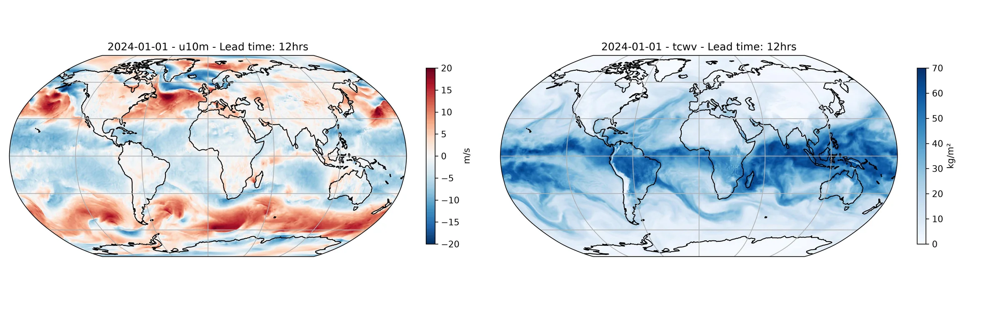

Running Atlas-CRPS Inference¶
Deterministic inference using the Atlas-CRPS prognostic model.
This example demonstrates how to run a single-member forecast using the Atlas-CRPS model, a generative AI weather model that uses a CRPS-trained latent transformer and an autoencoder to produce 6-hour forecasts on a 0.25 degree global grid. Atlas-CRPS requires two input lead times (t-6h and t) and maintains an internal latent state for autoregressive rollouts.
Atlas-CRPS shares its autoencoder with the Atlas (stochastic interpolant) model and
achieves comparable forecast skill, but generates each ensemble member with a single
forward pass instead of an iterative sampling loop, making it substantially faster:
the published Atlas package samples its stochastic interpolant over 100 steps per
6-hour forecast step, so Atlas-CRPS runs with roughly two orders of magnitude fewer
evaluations of the generative core per step (actual end-to-end wall-clock speedup is
somewhat lower once the shared, fixed-cost autoencoder decode is accounted for, but
is still substantial). For most use cases Atlas-CRPS is the recommended entry point;
ensemble members can be generated by calling the model repeatedly from the same
initial condition (see torch.manual_seed for reproducible members).
earth2studio.models.px.Atlas and
earth2studio.models.px.AtlasCRPS expose the same
user-facing interface, so the two models are interchangeable in code — every usage of
AtlasCRPS below works unchanged if swapped for Atlas, and vice versa.
In this example you will learn:
- How to instantiate the Atlas-CRPS prognostic model
- How to run a single-member forecast with Atlas-CRPS
- How to visualize predicted 10m u-wind and total column water vapour
We need the following:
- Prognostic Model: Use the Atlas-CRPS model
earth2studio.models.px.AtlasCRPS. - Datasource: Pull data from the ARCO ERA5 data source
earth2studio.data.ARCO_ERA5. - IO Backend: Save the outputs into a Zarr store
earth2studio.io.ZarrBackend.
Note
Atlas-CRPS requires two input lead times (t-6h and t) to produce a forecast.
The deterministic workflow handles this automatically via the model's
input_coords definition.
Warning
Atlas-CRPS was trained on ERA5 data and in-filled NaNs in SST over landmasses with a value of 0 K using the ERA5 land-sea mask. If you are using a different SST dataset, you will need to in-fill the NaNs using the appropriate land-sea mask.
Note
Atlas-CRPS expects total precipitation as a 6-hour accumulation (tp06), not the
1-hour accumulation returned by a bare tp request. The model's VARIABLES list
already requests tp06, so data sources with a matching lexicon entry (including
ARCO ERA5) will accumulate the correct window automatically.
import os
os.makedirs("outputs", exist_ok=True)
# Performance optimization for Atlas-CRPS model
# This is on by default in NGC containers, but other environments may need to set it manually.
os.environ["TORCH_ALLOW_TF32_CUBLAS_OVERRIDE"] = "1"
from dotenv import load_dotenv
load_dotenv() # TODO: make common example prep function
import numpy as np
import torch
from earth2studio.data import ARCO_ERA5
from earth2studio.data.utils import fetch_data
from earth2studio.io import ZarrBackend
from earth2studio.models.px import AtlasCRPS
# Load the default model package which downloads the checkpoint from HuggingFace
package = AtlasCRPS.load_default_package()
model = AtlasCRPS.load_model(package)
# Create the data source
data = ARCO_ERA5()
# Create the IO handler
io = ZarrBackend()
Console output1338 lines
Downloading config.json: 0%| | 0.00/27.0 [00:00<?, ?B/s]
Downloading config.json: 100%|██████████| 27.0/27.0 [00:00<00:00, 155B/s]
Downloading config.json: 100%|██████████| 27.0/27.0 [00:00<00:00, 153B/s]
Downloading config.json: 0%| | 0.00/1.83k [00:00<?, ?B/s]
Downloading config.json: 100%|██████████| 1.83k/1.83k [00:00<00:00, 10.6kB/s]
Downloading config.json: 100%|██████████| 1.83k/1.83k [00:00<00:00, 10.4kB/s]
Downloading model_best.mdlus: 0%| | 0.00/12.5G [00:00<?, ?B/s]
Downloading model_best.mdlus: 0%| | 10.0M/12.5G [00:01<33:32, 6.66MB/s]
Downloading model_best.mdlus: 0%| | 30.0M/12.5G [00:01<10:19, 21.6MB/s]
Downloading model_best.mdlus: 0%| | 50.0M/12.5G [00:01<06:00, 37.1MB/s]
Downloading model_best.mdlus: 1%| | 70.0M/12.5G [00:02<04:18, 51.6MB/s]
Downloading model_best.mdlus: 1%| | 90.0M/12.5G [00:02<03:28, 63.9MB/s]
Downloading model_best.mdlus: 1%| | 110M/12.5G [00:02<02:55, 75.6MB/s]
Downloading model_best.mdlus: 1%| | 130M/12.5G [00:02<02:36, 84.8MB/s]
Downloading model_best.mdlus: 1%| | 150M/12.5G [00:02<02:25, 90.8MB/s]
Downloading model_best.mdlus: 1%|▏ | 170M/12.5G [00:03<02:13, 98.9MB/s]
Downloading model_best.mdlus: 1%|▏ | 190M/12.5G [00:03<02:06, 104MB/s]
Downloading model_best.mdlus: 2%|▏ | 210M/12.5G [00:03<02:02, 108MB/s]
Downloading model_best.mdlus: 2%|▏ | 230M/12.5G [00:03<01:58, 111MB/s]
Downloading model_best.mdlus: 2%|▏ | 250M/12.5G [00:03<02:00, 109MB/s]
Downloading model_best.mdlus: 2%|▏ | 270M/12.5G [00:04<01:58, 111MB/s]
Downloading model_best.mdlus: 2%|▏ | 290M/12.5G [00:04<01:59, 110MB/s]
Downloading model_best.mdlus: 2%|▏ | 310M/12.5G [00:04<01:59, 110MB/s]
Downloading model_best.mdlus: 3%|▎ | 330M/12.5G [00:04<02:07, 103MB/s]
Downloading model_best.mdlus: 3%|▎ | 350M/12.5G [00:04<02:03, 105MB/s]
Downloading model_best.mdlus: 3%|▎ | 370M/12.5G [00:05<02:15, 95.9MB/s]
Downloading model_best.mdlus: 3%|▎ | 390M/12.5G [00:05<02:13, 97.5MB/s]
Downloading model_best.mdlus: 3%|▎ | 400M/12.5G [00:05<02:16, 95.4MB/s]
Downloading model_best.mdlus: 3%|▎ | 410M/12.5G [00:05<02:14, 96.5MB/s]
Downloading model_best.mdlus: 3%|▎ | 430M/12.5G [00:05<02:10, 99.0MB/s]
Downloading model_best.mdlus: 3%|▎ | 440M/12.5G [00:05<02:18, 93.5MB/s]
Downloading model_best.mdlus: 4%|▎ | 450M/12.5G [00:05<02:20, 92.3MB/s]
Downloading model_best.mdlus: 4%|▎ | 460M/12.5G [00:06<02:17, 94.3MB/s]
Downloading model_best.mdlus: 4%|▎ | 470M/12.5G [00:06<02:29, 86.3MB/s]
Downloading model_best.mdlus: 4%|▍ | 490M/12.5G [00:06<02:27, 87.6MB/s]
Downloading model_best.mdlus: 4%|▍ | 500M/12.5G [00:06<02:29, 86.0MB/s]
Downloading model_best.mdlus: 4%|▍ | 510M/12.5G [00:06<02:43, 78.7MB/s]
Downloading model_best.mdlus: 4%|▍ | 520M/12.5G [00:06<02:44, 78.2MB/s]
Downloading model_best.mdlus: 4%|▍ | 530M/12.5G [00:07<02:38, 81.4MB/s]
Downloading model_best.mdlus: 4%|▍ | 550M/12.5G [00:07<02:11, 97.4MB/s]
Downloading model_best.mdlus: 4%|▍ | 570M/12.5G [00:07<02:01, 105MB/s]
Downloading model_best.mdlus: 5%|▍ | 590M/12.5G [00:07<01:55, 111MB/s]
Downloading model_best.mdlus: 5%|▍ | 610M/12.5G [00:07<01:52, 114MB/s]
Downloading model_best.mdlus: 5%|▍ | 630M/12.5G [00:07<01:50, 116MB/s]
Downloading model_best.mdlus: 5%|▌ | 650M/12.5G [00:08<01:48, 117MB/s]
Downloading model_best.mdlus: 5%|▌ | 670M/12.5G [00:08<01:47, 118MB/s]
Downloading model_best.mdlus: 5%|▌ | 690M/12.5G [00:08<01:52, 113MB/s]
Downloading model_best.mdlus: 6%|▌ | 710M/12.5G [00:08<01:53, 112MB/s]
Downloading model_best.mdlus: 6%|▌ | 730M/12.5G [00:08<01:50, 114MB/s]
Downloading model_best.mdlus: 6%|▌ | 750M/12.5G [00:08<01:49, 115MB/s]
Downloading model_best.mdlus: 6%|▌ | 770M/12.5G [00:09<01:52, 112MB/s]
Downloading model_best.mdlus: 6%|▌ | 790M/12.5G [00:09<01:54, 110MB/s]
Downloading model_best.mdlus: 6%|▋ | 810M/12.5G [00:09<01:52, 111MB/s]
Downloading model_best.mdlus: 6%|▋ | 830M/12.5G [00:09<02:08, 97.6MB/s]
Downloading model_best.mdlus: 7%|▋ | 840M/12.5G [00:09<02:14, 93.0MB/s]
Downloading model_best.mdlus: 7%|▋ | 860M/12.5G [00:10<02:14, 92.8MB/s]
Downloading model_best.mdlus: 7%|▋ | 870M/12.5G [00:10<02:13, 93.9MB/s]
Downloading model_best.mdlus: 7%|▋ | 890M/12.5G [00:10<02:00, 103MB/s]
Downloading model_best.mdlus: 7%|▋ | 910M/12.5G [00:10<01:57, 106MB/s]
Downloading model_best.mdlus: 7%|▋ | 930M/12.5G [00:10<01:52, 110MB/s]
Downloading model_best.mdlus: 7%|▋ | 950M/12.5G [00:10<01:49, 113MB/s]
Downloading model_best.mdlus: 8%|▊ | 970M/12.5G [00:11<01:47, 116MB/s]
Downloading model_best.mdlus: 8%|▊ | 990M/12.5G [00:11<01:51, 111MB/s]
Downloading model_best.mdlus: 8%|▊ | 0.99G/12.5G [00:11<01:53, 109MB/s]
Downloading model_best.mdlus: 8%|▊ | 1.01G/12.5G [00:11<02:02, 101MB/s]
Downloading model_best.mdlus: 8%|▊ | 1.03G/12.5G [00:11<01:59, 103MB/s]
Downloading model_best.mdlus: 8%|▊ | 1.04G/12.5G [00:12<02:04, 99.2MB/s]
Downloading model_best.mdlus: 8%|▊ | 1.04G/12.5G [00:12<02:08, 95.8MB/s]
Downloading model_best.mdlus: 8%|▊ | 1.05G/12.5G [00:12<02:09, 95.0MB/s]
Downloading model_best.mdlus: 9%|▊ | 1.07G/12.5G [00:12<02:06, 96.9MB/s]
Downloading model_best.mdlus: 9%|▊ | 1.08G/12.5G [00:12<02:18, 88.5MB/s]
Downloading model_best.mdlus: 9%|▉ | 1.10G/12.5G [00:12<02:14, 90.7MB/s]
Downloading model_best.mdlus: 9%|▉ | 1.11G/12.5G [00:13<02:11, 92.6MB/s]
Downloading model_best.mdlus: 9%|▉ | 1.13G/12.5G [00:13<01:58, 103MB/s]
Downloading model_best.mdlus: 9%|▉ | 1.14G/12.5G [00:13<02:14, 90.9MB/s]
Downloading model_best.mdlus: 9%|▉ | 1.15G/12.5G [00:13<02:13, 91.1MB/s]
Downloading model_best.mdlus: 9%|▉ | 1.16G/12.5G [00:13<02:21, 86.0MB/s]
Downloading model_best.mdlus: 9%|▉ | 1.17G/12.5G [00:13<02:22, 85.6MB/s]
Downloading model_best.mdlus: 9%|▉ | 1.18G/12.5G [00:13<02:19, 86.9MB/s]
Downloading model_best.mdlus: 10%|▉ | 1.19G/12.5G [00:13<02:17, 88.4MB/s]
Downloading model_best.mdlus: 10%|▉ | 1.20G/12.5G [00:14<02:24, 84.1MB/s]
Downloading model_best.mdlus: 10%|▉ | 1.22G/12.5G [00:14<02:12, 91.6MB/s]
Downloading model_best.mdlus: 10%|▉ | 1.23G/12.5G [00:14<02:09, 93.5MB/s]
Downloading model_best.mdlus: 10%|▉ | 1.24G/12.5G [00:14<02:20, 86.1MB/s]
Downloading model_best.mdlus: 10%|█ | 1.25G/12.5G [00:14<02:48, 71.5MB/s]
Downloading model_best.mdlus: 10%|█ | 1.26G/12.5G [00:14<02:48, 71.6MB/s]
Downloading model_best.mdlus: 10%|█ | 1.27G/12.5G [00:15<03:17, 60.9MB/s]
Downloading model_best.mdlus: 10%|█ | 1.28G/12.5G [00:15<04:00, 50.0MB/s]
Downloading model_best.mdlus: 10%|█ | 1.29G/12.5G [00:15<03:33, 56.3MB/s]
Downloading model_best.mdlus: 10%|█ | 1.30G/12.5G [00:15<03:30, 57.1MB/s]
Downloading model_best.mdlus: 10%|█ | 1.31G/12.5G [00:16<03:58, 50.3MB/s]
Downloading model_best.mdlus: 11%|█ | 1.32G/12.5G [00:16<03:33, 56.2MB/s]
Downloading model_best.mdlus: 11%|█ | 1.33G/12.5G [00:16<03:41, 54.1MB/s]
Downloading model_best.mdlus: 11%|█ | 1.34G/12.5G [00:16<03:44, 53.3MB/s]
Downloading model_best.mdlus: 11%|█ | 1.35G/12.5G [00:16<03:45, 53.0MB/s]
Downloading model_best.mdlus: 11%|█ | 1.36G/12.5G [00:17<03:42, 53.8MB/s]
Downloading model_best.mdlus: 11%|█ | 1.37G/12.5G [00:17<04:02, 49.3MB/s]
Downloading model_best.mdlus: 11%|█ | 1.38G/12.5G [00:17<03:55, 50.6MB/s]
Downloading model_best.mdlus: 11%|█ | 1.39G/12.5G [00:17<03:45, 52.8MB/s]
Downloading model_best.mdlus: 11%|█ | 1.40G/12.5G [00:17<03:22, 58.9MB/s]
Downloading model_best.mdlus: 11%|█▏ | 1.41G/12.5G [00:18<03:48, 52.1MB/s]
Downloading model_best.mdlus: 11%|█▏ | 1.42G/12.5G [00:18<04:16, 46.4MB/s]
Downloading model_best.mdlus: 11%|█▏ | 1.43G/12.5G [00:18<04:00, 49.4MB/s]
Downloading model_best.mdlus: 11%|█▏ | 1.44G/12.5G [00:18<04:06, 48.2MB/s]
Downloading model_best.mdlus: 12%|█▏ | 1.45G/12.5G [00:19<04:30, 43.8MB/s]
Downloading model_best.mdlus: 12%|█▏ | 1.46G/12.5G [00:19<04:35, 43.1MB/s]
Downloading model_best.mdlus: 12%|█▏ | 1.46G/12.5G [00:19<04:22, 45.2MB/s]
Downloading model_best.mdlus: 12%|█▏ | 1.47G/12.5G [00:19<04:22, 45.0MB/s]
Downloading model_best.mdlus: 12%|█▏ | 1.48G/12.5G [00:19<04:41, 41.9MB/s]
Downloading model_best.mdlus: 12%|█▏ | 1.49G/12.5G [00:20<05:07, 38.4MB/s]
Downloading model_best.mdlus: 12%|█▏ | 1.50G/12.5G [00:20<04:32, 43.2MB/s]
Downloading model_best.mdlus: 12%|█▏ | 1.51G/12.5G [00:20<04:23, 44.7MB/s]
Downloading model_best.mdlus: 12%|█▏ | 1.52G/12.5G [00:20<04:19, 45.3MB/s]
Downloading model_best.mdlus: 12%|█▏ | 1.53G/12.5G [00:21<04:17, 45.7MB/s]
Downloading model_best.mdlus: 12%|█▏ | 1.54G/12.5G [00:21<03:45, 52.1MB/s]
Downloading model_best.mdlus: 12%|█▏ | 1.55G/12.5G [00:21<03:47, 51.7MB/s]
Downloading model_best.mdlus: 13%|█▎ | 1.56G/12.5G [00:21<04:00, 48.8MB/s]
Downloading model_best.mdlus: 13%|█▎ | 1.57G/12.5G [00:21<04:13, 46.3MB/s]
Downloading model_best.mdlus: 13%|█▎ | 1.58G/12.5G [00:22<04:12, 46.5MB/s]
Downloading model_best.mdlus: 13%|█▎ | 1.59G/12.5G [00:22<03:59, 48.9MB/s]
Downloading model_best.mdlus: 13%|█▎ | 1.60G/12.5G [00:22<05:01, 38.7MB/s]
Downloading model_best.mdlus: 13%|█▎ | 1.61G/12.5G [00:22<04:17, 45.4MB/s]
Downloading model_best.mdlus: 13%|█▎ | 1.62G/12.5G [00:23<04:04, 47.8MB/s]
Downloading model_best.mdlus: 13%|█▎ | 1.63G/12.5G [00:23<04:10, 46.5MB/s]
Downloading model_best.mdlus: 13%|█▎ | 1.64G/12.5G [00:23<04:07, 47.0MB/s]
Downloading model_best.mdlus: 13%|█▎ | 1.65G/12.5G [00:23<03:43, 52.0MB/s]
Downloading model_best.mdlus: 13%|█▎ | 1.66G/12.5G [00:23<03:16, 59.2MB/s]
Downloading model_best.mdlus: 13%|█▎ | 1.67G/12.5G [00:23<02:57, 65.5MB/s]
Downloading model_best.mdlus: 13%|█▎ | 1.68G/12.5G [00:24<03:12, 60.3MB/s]
Downloading model_best.mdlus: 14%|█▎ | 1.69G/12.5G [00:24<03:22, 57.3MB/s]
Downloading model_best.mdlus: 14%|█▎ | 1.70G/12.5G [00:24<03:16, 58.9MB/s]
Downloading model_best.mdlus: 14%|█▎ | 1.71G/12.5G [00:24<03:18, 58.2MB/s]
Downloading model_best.mdlus: 14%|█▍ | 1.72G/12.5G [00:24<03:00, 63.9MB/s]
Downloading model_best.mdlus: 14%|█▍ | 1.73G/12.5G [00:25<03:04, 62.6MB/s]
Downloading model_best.mdlus: 14%|█▍ | 1.74G/12.5G [00:25<03:39, 52.6MB/s]
Downloading model_best.mdlus: 14%|█▍ | 1.75G/12.5G [00:25<03:55, 48.9MB/s]
Downloading model_best.mdlus: 14%|█▍ | 1.76G/12.5G [00:25<03:40, 52.2MB/s]
Downloading model_best.mdlus: 14%|█▍ | 1.77G/12.5G [00:25<03:14, 59.1MB/s]
Downloading model_best.mdlus: 14%|█▍ | 1.79G/12.5G [00:26<02:46, 68.9MB/s]
Downloading model_best.mdlus: 14%|█▍ | 1.80G/12.5G [00:26<02:41, 71.1MB/s]
Downloading model_best.mdlus: 14%|█▍ | 1.81G/12.5G [00:26<02:42, 70.5MB/s]
Downloading model_best.mdlus: 15%|█▍ | 1.82G/12.5G [00:26<03:02, 62.7MB/s]
Downloading model_best.mdlus: 15%|█▍ | 1.83G/12.5G [00:26<02:57, 64.4MB/s]
Downloading model_best.mdlus: 15%|█▍ | 1.84G/12.5G [00:26<03:00, 63.4MB/s]
Downloading model_best.mdlus: 15%|█▍ | 1.85G/12.5G [00:27<03:09, 60.4MB/s]
Downloading model_best.mdlus: 15%|█▍ | 1.86G/12.5G [00:27<02:53, 65.7MB/s]
Downloading model_best.mdlus: 15%|█▍ | 1.87G/12.5G [00:27<02:40, 70.9MB/s]
Downloading model_best.mdlus: 15%|█▌ | 1.88G/12.5G [00:27<02:29, 76.5MB/s]
Downloading model_best.mdlus: 15%|█▌ | 1.88G/12.5G [00:27<02:20, 81.2MB/s]
Downloading model_best.mdlus: 15%|█▌ | 1.89G/12.5G [00:27<02:21, 80.6MB/s]
Downloading model_best.mdlus: 15%|█▌ | 1.90G/12.5G [00:27<02:24, 78.9MB/s]
Downloading model_best.mdlus: 15%|█▌ | 1.91G/12.5G [00:27<02:22, 79.8MB/s]
Downloading model_best.mdlus: 15%|█▌ | 1.92G/12.5G [00:28<02:22, 79.7MB/s]
Downloading model_best.mdlus: 15%|█▌ | 1.93G/12.5G [00:28<02:17, 82.6MB/s]
Downloading model_best.mdlus: 16%|█▌ | 1.94G/12.5G [00:28<02:12, 85.5MB/s]
Downloading model_best.mdlus: 16%|█▌ | 1.95G/12.5G [00:28<02:13, 84.7MB/s]
Downloading model_best.mdlus: 16%|█▌ | 1.96G/12.5G [00:28<02:10, 86.9MB/s]
Downloading model_best.mdlus: 16%|█▌ | 1.97G/12.5G [00:28<02:03, 91.6MB/s]
Downloading model_best.mdlus: 16%|█▌ | 1.98G/12.5G [00:28<02:12, 85.5MB/s]
Downloading model_best.mdlus: 16%|█▌ | 1.99G/12.5G [00:28<02:07, 88.5MB/s]
Downloading model_best.mdlus: 16%|█▌ | 2.00G/12.5G [00:29<02:02, 92.1MB/s]
Downloading model_best.mdlus: 16%|█▌ | 2.01G/12.5G [00:29<02:03, 91.5MB/s]
Downloading model_best.mdlus: 16%|█▌ | 2.02G/12.5G [00:29<02:11, 85.8MB/s]
Downloading model_best.mdlus: 16%|█▋ | 2.04G/12.5G [00:29<02:01, 92.4MB/s]
Downloading model_best.mdlus: 16%|█▋ | 2.05G/12.5G [00:29<02:00, 93.0MB/s]
Downloading model_best.mdlus: 17%|█▋ | 2.07G/12.5G [00:29<01:47, 104MB/s]
Downloading model_best.mdlus: 17%|█▋ | 2.08G/12.5G [00:29<01:49, 102MB/s]
Downloading model_best.mdlus: 17%|█▋ | 2.10G/12.5G [00:30<01:51, 100MB/s]
Downloading model_best.mdlus: 17%|█▋ | 2.12G/12.5G [00:30<01:49, 102MB/s]
Downloading model_best.mdlus: 17%|█▋ | 2.13G/12.5G [00:30<01:49, 101MB/s]
Downloading model_best.mdlus: 17%|█▋ | 2.14G/12.5G [00:30<01:53, 97.8MB/s]
Downloading model_best.mdlus: 17%|█▋ | 2.15G/12.5G [00:30<01:53, 98.2MB/s]
Downloading model_best.mdlus: 17%|█▋ | 2.16G/12.5G [00:30<01:51, 99.5MB/s]
Downloading model_best.mdlus: 17%|█▋ | 2.17G/12.5G [00:30<01:52, 98.8MB/s]
Downloading model_best.mdlus: 17%|█▋ | 2.18G/12.5G [00:30<01:51, 99.3MB/s]
Downloading model_best.mdlus: 18%|█▊ | 2.19G/12.5G [00:31<02:04, 89.0MB/s]
Downloading model_best.mdlus: 18%|█▊ | 2.20G/12.5G [00:31<02:02, 90.1MB/s]
Downloading model_best.mdlus: 18%|█▊ | 2.22G/12.5G [00:31<01:56, 94.9MB/s]
Downloading model_best.mdlus: 18%|█▊ | 2.24G/12.5G [00:31<01:46, 103MB/s]
Downloading model_best.mdlus: 18%|█▊ | 2.26G/12.5G [00:31<01:41, 109MB/s]
Downloading model_best.mdlus: 18%|█▊ | 2.28G/12.5G [00:31<01:37, 112MB/s]
Downloading model_best.mdlus: 18%|█▊ | 2.29G/12.5G [00:32<01:36, 114MB/s]
Downloading model_best.mdlus: 19%|█▊ | 2.31G/12.5G [00:32<01:34, 115MB/s]
Downloading model_best.mdlus: 19%|█▊ | 2.33G/12.5G [00:32<01:34, 115MB/s]
Downloading model_best.mdlus: 19%|█▉ | 2.35G/12.5G [00:32<01:35, 114MB/s]
Downloading model_best.mdlus: 19%|█▉ | 2.37G/12.5G [00:32<01:35, 113MB/s]
Downloading model_best.mdlus: 19%|█▉ | 2.39G/12.5G [00:33<01:36, 112MB/s]
Downloading model_best.mdlus: 19%|█▉ | 2.41G/12.5G [00:33<01:46, 102MB/s]
Downloading model_best.mdlus: 19%|█▉ | 2.43G/12.5G [00:33<01:41, 106MB/s]
Downloading model_best.mdlus: 20%|█▉ | 2.45G/12.5G [00:33<01:42, 105MB/s]
Downloading model_best.mdlus: 20%|█▉ | 2.47G/12.5G [00:33<01:38, 109MB/s]
Downloading model_best.mdlus: 20%|█▉ | 2.49G/12.5G [00:34<01:38, 109MB/s]
Downloading model_best.mdlus: 20%|██ | 2.51G/12.5G [00:34<01:41, 106MB/s]
Downloading model_best.mdlus: 20%|██ | 2.53G/12.5G [00:34<01:45, 101MB/s]
Downloading model_best.mdlus: 20%|██ | 2.54G/12.5G [00:34<01:54, 93.5MB/s]
Downloading model_best.mdlus: 20%|██ | 2.55G/12.5G [00:34<02:13, 79.7MB/s]
Downloading model_best.mdlus: 20%|██ | 2.56G/12.5G [00:34<02:13, 79.8MB/s]
Downloading model_best.mdlus: 21%|██ | 2.57G/12.5G [00:35<02:26, 72.6MB/s]
Downloading model_best.mdlus: 21%|██ | 2.58G/12.5G [00:35<02:32, 69.6MB/s]
Downloading model_best.mdlus: 21%|██ | 2.59G/12.5G [00:35<02:56, 60.3MB/s]
Downloading model_best.mdlus: 21%|██ | 2.60G/12.5G [00:35<02:46, 63.8MB/s]
Downloading model_best.mdlus: 21%|██ | 2.61G/12.5G [00:35<02:41, 65.6MB/s]
Downloading model_best.mdlus: 21%|██ | 2.62G/12.5G [00:35<02:32, 69.7MB/s]
Downloading model_best.mdlus: 21%|██ | 2.63G/12.5G [00:36<02:37, 67.4MB/s]
Downloading model_best.mdlus: 21%|██ | 2.64G/12.5G [00:36<02:24, 73.3MB/s]
Downloading model_best.mdlus: 21%|██ | 2.65G/12.5G [00:36<02:35, 68.0MB/s]
Downloading model_best.mdlus: 21%|██▏ | 2.66G/12.5G [00:36<02:28, 70.9MB/s]
Downloading model_best.mdlus: 21%|██▏ | 2.67G/12.5G [00:36<02:26, 72.2MB/s]
Downloading model_best.mdlus: 21%|██▏ | 2.68G/12.5G [00:36<02:18, 76.0MB/s]
Downloading model_best.mdlus: 22%|██▏ | 2.69G/12.5G [00:37<02:26, 71.8MB/s]
Downloading model_best.mdlus: 22%|██▏ | 2.70G/12.5G [00:37<02:28, 70.9MB/s]
Downloading model_best.mdlus: 22%|██▏ | 2.71G/12.5G [00:37<02:28, 70.8MB/s]
Downloading model_best.mdlus: 22%|██▏ | 2.71G/12.5G [00:37<02:33, 68.3MB/s]
Downloading model_best.mdlus: 22%|██▏ | 2.72G/12.5G [00:37<02:31, 69.1MB/s]
Downloading model_best.mdlus: 22%|██▏ | 2.73G/12.5G [00:37<02:28, 70.6MB/s]
Downloading model_best.mdlus: 22%|██▏ | 2.74G/12.5G [00:37<02:28, 70.5MB/s]
Downloading model_best.mdlus: 22%|██▏ | 2.76G/12.5G [00:38<02:04, 84.0MB/s]
Downloading model_best.mdlus: 22%|██▏ | 2.77G/12.5G [00:38<02:01, 86.2MB/s]
Downloading model_best.mdlus: 22%|██▏ | 2.78G/12.5G [00:38<02:10, 79.7MB/s]
Downloading model_best.mdlus: 22%|██▏ | 2.79G/12.5G [00:38<03:04, 56.5MB/s]
Downloading model_best.mdlus: 22%|██▏ | 2.80G/12.5G [00:38<02:44, 63.0MB/s]
Downloading model_best.mdlus: 23%|██▎ | 2.82G/12.5G [00:39<02:26, 71.0MB/s]
Downloading model_best.mdlus: 23%|██▎ | 2.83G/12.5G [00:39<02:21, 73.2MB/s]
Downloading model_best.mdlus: 23%|██▎ | 2.84G/12.5G [00:39<02:33, 67.6MB/s]
Downloading model_best.mdlus: 23%|██▎ | 2.86G/12.5G [00:39<02:18, 74.9MB/s]
Downloading model_best.mdlus: 23%|██▎ | 2.88G/12.5G [00:39<02:04, 82.7MB/s]
Downloading model_best.mdlus: 23%|██▎ | 2.89G/12.5G [00:39<02:00, 85.3MB/s]
Downloading model_best.mdlus: 23%|██▎ | 2.90G/12.5G [00:40<02:00, 85.8MB/s]
Downloading model_best.mdlus: 23%|██▎ | 2.91G/12.5G [00:40<01:56, 88.2MB/s]
Downloading model_best.mdlus: 23%|██▎ | 2.92G/12.5G [00:40<01:56, 88.3MB/s]
Downloading model_best.mdlus: 24%|██▎ | 2.94G/12.5G [00:40<01:57, 87.5MB/s]
Downloading model_best.mdlus: 24%|██▎ | 2.96G/12.5G [00:40<01:44, 98.2MB/s]
Downloading model_best.mdlus: 24%|██▍ | 2.98G/12.5G [00:40<01:39, 103MB/s]
Downloading model_best.mdlus: 24%|██▍ | 3.00G/12.5G [00:41<01:35, 106MB/s]
Downloading model_best.mdlus: 24%|██▍ | 3.02G/12.5G [00:41<01:34, 108MB/s]
Downloading model_best.mdlus: 24%|██▍ | 3.04G/12.5G [00:41<01:37, 104MB/s]
Downloading model_best.mdlus: 24%|██▍ | 3.06G/12.5G [00:41<01:38, 103MB/s]
Downloading model_best.mdlus: 25%|██▍ | 3.08G/12.5G [00:41<01:36, 104MB/s]
Downloading model_best.mdlus: 25%|██▍ | 3.10G/12.5G [00:42<01:35, 106MB/s]
Downloading model_best.mdlus: 25%|██▍ | 3.12G/12.5G [00:42<01:37, 104MB/s]
Downloading model_best.mdlus: 25%|██▌ | 3.12G/12.5G [00:42<01:37, 103MB/s]
Downloading model_best.mdlus: 25%|██▌ | 3.13G/12.5G [00:42<01:44, 95.7MB/s]
Downloading model_best.mdlus: 25%|██▌ | 3.14G/12.5G [00:42<01:51, 89.7MB/s]
Downloading model_best.mdlus: 25%|██▌ | 3.16G/12.5G [00:42<01:46, 93.7MB/s]
Downloading model_best.mdlus: 25%|██▌ | 3.18G/12.5G [00:43<01:47, 93.0MB/s]
Downloading model_best.mdlus: 26%|██▌ | 3.19G/12.5G [00:43<01:57, 85.3MB/s]
Downloading model_best.mdlus: 26%|██▌ | 3.20G/12.5G [00:43<03:00, 55.3MB/s]
Downloading model_best.mdlus: 26%|██▌ | 3.22G/12.5G [00:43<02:27, 67.7MB/s]
Downloading model_best.mdlus: 26%|██▌ | 3.23G/12.5G [00:44<02:35, 64.1MB/s]
Downloading model_best.mdlus: 26%|██▌ | 3.24G/12.5G [00:44<02:43, 60.8MB/s]
Downloading model_best.mdlus: 26%|██▌ | 3.25G/12.5G [00:44<02:41, 61.5MB/s]
Downloading model_best.mdlus: 26%|██▌ | 3.26G/12.5G [00:44<03:02, 54.4MB/s]
Downloading model_best.mdlus: 26%|██▌ | 3.27G/12.5G [00:44<03:01, 54.6MB/s]
Downloading model_best.mdlus: 26%|██▋ | 3.28G/12.5G [00:45<03:22, 48.8MB/s]
Downloading model_best.mdlus: 26%|██▋ | 3.29G/12.5G [00:45<03:38, 45.2MB/s]
Downloading model_best.mdlus: 26%|██▋ | 3.30G/12.5G [00:45<03:25, 47.9MB/s]
Downloading model_best.mdlus: 27%|██▋ | 3.31G/12.5G [00:45<03:26, 47.7MB/s]
Downloading model_best.mdlus: 27%|██▋ | 3.32G/12.5G [00:46<03:21, 48.8MB/s]
Downloading model_best.mdlus: 27%|██▋ | 3.33G/12.5G [00:46<03:17, 49.7MB/s]
Downloading model_best.mdlus: 27%|██▋ | 3.34G/12.5G [00:46<02:55, 56.0MB/s]
Downloading model_best.mdlus: 27%|██▋ | 3.35G/12.5G [00:46<02:36, 62.8MB/s]
Downloading model_best.mdlus: 27%|██▋ | 3.36G/12.5G [00:46<02:18, 70.8MB/s]
Downloading model_best.mdlus: 27%|██▋ | 3.37G/12.5G [00:46<02:09, 75.7MB/s]
Downloading model_best.mdlus: 27%|██▋ | 3.39G/12.5G [00:46<01:59, 81.7MB/s]
Downloading model_best.mdlus: 27%|██▋ | 3.40G/12.5G [00:47<01:53, 85.9MB/s]
Downloading model_best.mdlus: 27%|██▋ | 3.41G/12.5G [00:47<01:53, 85.6MB/s]
Downloading model_best.mdlus: 27%|██▋ | 3.42G/12.5G [00:47<01:58, 82.2MB/s]
Downloading model_best.mdlus: 27%|██▋ | 3.43G/12.5G [00:47<02:01, 80.4MB/s]
Downloading model_best.mdlus: 28%|██▊ | 3.44G/12.5G [00:47<01:58, 82.1MB/s]
Downloading model_best.mdlus: 28%|██▊ | 3.45G/12.5G [00:47<02:17, 70.7MB/s]
Downloading model_best.mdlus: 28%|██▊ | 3.46G/12.5G [00:47<02:06, 76.4MB/s]
Downloading model_best.mdlus: 28%|██▊ | 3.47G/12.5G [00:48<02:13, 72.5MB/s]
Downloading model_best.mdlus: 28%|██▊ | 3.48G/12.5G [00:48<02:04, 77.4MB/s]
Downloading model_best.mdlus: 28%|██▊ | 3.49G/12.5G [00:48<02:16, 70.6MB/s]
Downloading model_best.mdlus: 28%|██▊ | 3.50G/12.5G [00:48<02:09, 74.5MB/s]
Downloading model_best.mdlus: 28%|██▊ | 3.51G/12.5G [00:48<02:16, 70.5MB/s]
Downloading model_best.mdlus: 28%|██▊ | 3.52G/12.5G [00:48<02:16, 70.7MB/s]
Downloading model_best.mdlus: 28%|██▊ | 3.53G/12.5G [00:48<02:18, 69.4MB/s]
Downloading model_best.mdlus: 28%|██▊ | 3.54G/12.5G [00:49<02:05, 76.6MB/s]
Downloading model_best.mdlus: 28%|██▊ | 3.54G/12.5G [00:49<01:59, 80.7MB/s]
Downloading model_best.mdlus: 28%|██▊ | 3.55G/12.5G [00:49<01:51, 85.8MB/s]
Downloading model_best.mdlus: 29%|██▊ | 3.56G/12.5G [00:49<01:47, 89.0MB/s]
Downloading model_best.mdlus: 29%|██▊ | 3.57G/12.5G [00:49<01:56, 82.3MB/s]
Downloading model_best.mdlus: 29%|██▊ | 3.58G/12.5G [00:49<01:59, 80.3MB/s]
Downloading model_best.mdlus: 29%|██▉ | 3.59G/12.5G [00:49<01:51, 85.3MB/s]
Downloading model_best.mdlus: 29%|██▉ | 3.60G/12.5G [00:49<01:54, 83.5MB/s]
Downloading model_best.mdlus: 29%|██▉ | 3.62G/12.5G [00:50<01:49, 87.3MB/s]
Downloading model_best.mdlus: 29%|██▉ | 3.63G/12.5G [00:50<01:47, 88.6MB/s]
Downloading model_best.mdlus: 29%|██▉ | 3.64G/12.5G [00:50<01:53, 83.6MB/s]
Downloading model_best.mdlus: 29%|██▉ | 3.66G/12.5G [00:50<01:48, 87.2MB/s]
Downloading model_best.mdlus: 29%|██▉ | 3.67G/12.5G [00:50<01:47, 87.8MB/s]
Downloading model_best.mdlus: 29%|██▉ | 3.68G/12.5G [00:50<01:45, 89.7MB/s]
Downloading model_best.mdlus: 30%|██▉ | 3.70G/12.5G [00:51<01:35, 99.2MB/s]
Downloading model_best.mdlus: 30%|██▉ | 3.71G/12.5G [00:51<01:40, 93.4MB/s]
Downloading model_best.mdlus: 30%|██▉ | 3.72G/12.5G [00:51<01:42, 91.8MB/s]
Downloading model_best.mdlus: 30%|██▉ | 3.73G/12.5G [00:51<02:38, 59.4MB/s]
Downloading model_best.mdlus: 30%|██▉ | 3.74G/12.5G [00:51<02:32, 61.5MB/s]
Downloading model_best.mdlus: 30%|███ | 3.75G/12.5G [00:51<02:29, 62.6MB/s]
Downloading model_best.mdlus: 30%|███ | 3.76G/12.5G [00:52<03:40, 42.5MB/s]
Downloading model_best.mdlus: 30%|███ | 3.77G/12.5G [00:52<03:10, 49.1MB/s]
Downloading model_best.mdlus: 30%|███ | 3.78G/12.5G [00:52<02:54, 53.7MB/s]
Downloading model_best.mdlus: 30%|███ | 3.79G/12.5G [00:52<02:34, 60.4MB/s]
Downloading model_best.mdlus: 30%|███ | 3.80G/12.5G [00:52<02:21, 65.8MB/s]
Downloading model_best.mdlus: 30%|███ | 3.81G/12.5G [00:53<02:20, 66.1MB/s]
Downloading model_best.mdlus: 31%|███ | 3.82G/12.5G [00:53<02:10, 71.6MB/s]
Downloading model_best.mdlus: 31%|███ | 3.83G/12.5G [00:53<02:00, 76.9MB/s]
Downloading model_best.mdlus: 31%|███ | 3.84G/12.5G [00:53<02:12, 70.0MB/s]
Downloading model_best.mdlus: 31%|███ | 3.85G/12.5G [00:53<02:17, 67.5MB/s]
Downloading model_best.mdlus: 31%|███ | 3.86G/12.5G [00:53<02:15, 68.5MB/s]
Downloading model_best.mdlus: 31%|███ | 3.87G/12.5G [00:53<02:04, 74.6MB/s]
Downloading model_best.mdlus: 31%|███ | 3.88G/12.5G [00:54<01:57, 78.5MB/s]
Downloading model_best.mdlus: 31%|███ | 3.89G/12.5G [00:54<01:49, 84.1MB/s]
Downloading model_best.mdlus: 31%|███ | 3.90G/12.5G [00:54<01:47, 86.2MB/s]
Downloading model_best.mdlus: 31%|███▏ | 3.92G/12.5G [00:54<01:38, 93.3MB/s]
Downloading model_best.mdlus: 31%|███▏ | 3.93G/12.5G [00:54<01:49, 83.8MB/s]
Downloading model_best.mdlus: 32%|███▏ | 3.94G/12.5G [00:54<01:47, 85.5MB/s]
Downloading model_best.mdlus: 32%|███▏ | 3.95G/12.5G [00:54<01:46, 86.4MB/s]
Downloading model_best.mdlus: 32%|███▏ | 3.96G/12.5G [00:55<01:55, 79.4MB/s]
Downloading model_best.mdlus: 32%|███▏ | 3.96G/12.5G [00:55<02:51, 53.2MB/s]
Downloading model_best.mdlus: 32%|███▏ | 3.97G/12.5G [00:55<03:25, 44.4MB/s]
Downloading model_best.mdlus: 32%|███▏ | 3.98G/12.5G [00:55<03:01, 50.3MB/s]
Downloading model_best.mdlus: 32%|███▏ | 3.99G/12.5G [00:55<02:40, 56.9MB/s]
Downloading model_best.mdlus: 32%|███▏ | 4.00G/12.5G [00:56<02:26, 62.0MB/s]
Downloading model_best.mdlus: 32%|███▏ | 4.01G/12.5G [00:56<02:15, 67.1MB/s]
Downloading model_best.mdlus: 32%|███▏ | 4.03G/12.5G [00:56<01:52, 81.0MB/s]
Downloading model_best.mdlus: 32%|███▏ | 4.05G/12.5G [00:56<01:41, 89.7MB/s]
Downloading model_best.mdlus: 33%|███▎ | 4.07G/12.5G [00:56<01:32, 97.6MB/s]
Downloading model_best.mdlus: 33%|███▎ | 4.09G/12.5G [00:56<01:25, 105MB/s]
Downloading model_best.mdlus: 33%|███▎ | 4.11G/12.5G [00:57<01:57, 76.4MB/s]
Downloading model_best.mdlus: 33%|███▎ | 4.12G/12.5G [00:57<02:47, 53.7MB/s]
Downloading model_best.mdlus: 33%|███▎ | 4.13G/12.5G [00:58<02:57, 50.4MB/s]
Downloading model_best.mdlus: 33%|███▎ | 4.14G/12.5G [00:58<03:36, 41.5MB/s]
Downloading model_best.mdlus: 33%|███▎ | 4.15G/12.5G [00:58<03:34, 41.8MB/s]
Downloading model_best.mdlus: 33%|███▎ | 4.16G/12.5G [00:59<03:32, 42.0MB/s]
Downloading model_best.mdlus: 33%|███▎ | 4.17G/12.5G [00:59<03:40, 40.5MB/s]
Downloading model_best.mdlus: 33%|███▎ | 4.18G/12.5G [00:59<03:16, 45.3MB/s]
Downloading model_best.mdlus: 34%|███▎ | 4.19G/12.5G [00:59<02:56, 50.4MB/s]
Downloading model_best.mdlus: 34%|███▎ | 4.20G/12.5G [00:59<02:31, 58.9MB/s]
Downloading model_best.mdlus: 34%|███▍ | 4.22G/12.5G [00:59<01:57, 75.5MB/s]
Downloading model_best.mdlus: 34%|███▍ | 4.24G/12.5G [01:00<01:39, 88.7MB/s]
Downloading model_best.mdlus: 34%|███▍ | 4.26G/12.5G [01:00<01:33, 94.7MB/s]
Downloading model_best.mdlus: 34%|███▍ | 4.27G/12.5G [01:00<01:34, 93.0MB/s]
Downloading model_best.mdlus: 34%|███▍ | 4.29G/12.5G [01:00<01:26, 102MB/s]
Downloading model_best.mdlus: 34%|███▍ | 4.31G/12.5G [01:00<01:23, 105MB/s]
Downloading model_best.mdlus: 35%|███▍ | 4.33G/12.5G [01:00<01:21, 108MB/s]
Downloading model_best.mdlus: 35%|███▍ | 4.35G/12.5G [01:01<01:16, 114MB/s]
Downloading model_best.mdlus: 35%|███▍ | 4.37G/12.5G [01:01<01:15, 115MB/s]
Downloading model_best.mdlus: 35%|███▌ | 4.38G/12.5G [01:01<01:15, 116MB/s]
Downloading model_best.mdlus: 35%|███▌ | 4.40G/12.5G [01:01<01:15, 116MB/s]
Downloading model_best.mdlus: 35%|███▌ | 4.42G/12.5G [01:01<01:14, 116MB/s]
Downloading model_best.mdlus: 36%|███▌ | 4.44G/12.5G [01:01<01:13, 118MB/s]
Downloading model_best.mdlus: 36%|███▌ | 4.46G/12.5G [01:02<01:13, 118MB/s]
Downloading model_best.mdlus: 36%|███▌ | 4.48G/12.5G [01:02<01:13, 117MB/s]
Downloading model_best.mdlus: 36%|███▌ | 4.50G/12.5G [01:02<01:14, 116MB/s]
Downloading model_best.mdlus: 36%|███▌ | 4.52G/12.5G [01:02<01:42, 83.4MB/s]
Downloading model_best.mdlus: 36%|███▋ | 4.54G/12.5G [01:03<01:35, 89.5MB/s]
Downloading model_best.mdlus: 37%|███▋ | 4.56G/12.5G [01:03<01:29, 95.5MB/s]
Downloading model_best.mdlus: 37%|███▋ | 4.58G/12.5G [01:03<01:24, 100MB/s]
Downloading model_best.mdlus: 37%|███▋ | 4.60G/12.5G [01:03<01:20, 105MB/s]
Downloading model_best.mdlus: 37%|███▋ | 4.62G/12.5G [01:03<01:17, 109MB/s]
Downloading model_best.mdlus: 37%|███▋ | 4.64G/12.5G [01:04<01:14, 113MB/s]
Downloading model_best.mdlus: 37%|███▋ | 4.66G/12.5G [01:04<01:14, 112MB/s]
Downloading model_best.mdlus: 37%|███▋ | 4.68G/12.5G [01:04<01:15, 111MB/s]
Downloading model_best.mdlus: 38%|███▊ | 4.70G/12.5G [01:04<01:18, 106MB/s]
Downloading model_best.mdlus: 38%|███▊ | 4.72G/12.5G [01:04<01:17, 107MB/s]
Downloading model_best.mdlus: 38%|███▊ | 4.74G/12.5G [01:05<01:20, 103MB/s]
Downloading model_best.mdlus: 38%|███▊ | 4.75G/12.5G [01:05<01:20, 103MB/s]
Downloading model_best.mdlus: 38%|███▊ | 4.77G/12.5G [01:05<01:17, 107MB/s]
Downloading model_best.mdlus: 38%|███▊ | 4.79G/12.5G [01:05<01:16, 108MB/s]
Downloading model_best.mdlus: 38%|███▊ | 4.80G/12.5G [01:05<01:14, 111MB/s]
Downloading model_best.mdlus: 39%|███▊ | 4.82G/12.5G [01:05<01:15, 109MB/s]
Downloading model_best.mdlus: 39%|███▉ | 4.84G/12.5G [01:06<01:17, 106MB/s]
Downloading model_best.mdlus: 39%|███▉ | 4.86G/12.5G [01:06<01:15, 108MB/s]
Downloading model_best.mdlus: 39%|███▉ | 4.88G/12.5G [01:06<01:22, 99.1MB/s]
Downloading model_best.mdlus: 39%|███▉ | 4.90G/12.5G [01:06<01:18, 104MB/s]
Downloading model_best.mdlus: 39%|███▉ | 4.92G/12.5G [01:06<01:15, 108MB/s]
Downloading model_best.mdlus: 40%|███▉ | 4.94G/12.5G [01:07<01:14, 109MB/s]
Downloading model_best.mdlus: 40%|███▉ | 4.96G/12.5G [01:07<01:14, 109MB/s]
Downloading model_best.mdlus: 40%|███▉ | 4.98G/12.5G [01:07<01:16, 105MB/s]
Downloading model_best.mdlus: 40%|████ | 5.00G/12.5G [01:07<01:17, 104MB/s]
Downloading model_best.mdlus: 40%|████ | 5.02G/12.5G [01:07<01:16, 105MB/s]
Downloading model_best.mdlus: 40%|████ | 5.04G/12.5G [01:08<01:18, 102MB/s]
Downloading model_best.mdlus: 40%|████ | 5.05G/12.5G [01:08<01:21, 98.1MB/s]
Downloading model_best.mdlus: 41%|████ | 5.06G/12.5G [01:08<01:21, 98.4MB/s]
Downloading model_best.mdlus: 41%|████ | 5.07G/12.5G [01:08<01:20, 99.6MB/s]
Downloading model_best.mdlus: 41%|████ | 5.09G/12.5G [01:08<01:18, 102MB/s]
Downloading model_best.mdlus: 41%|████ | 5.10G/12.5G [01:08<01:18, 101MB/s]
Downloading model_best.mdlus: 41%|████ | 5.12G/12.5G [01:08<01:14, 107MB/s]
Downloading model_best.mdlus: 41%|████ | 5.14G/12.5G [01:09<01:14, 107MB/s]
Downloading model_best.mdlus: 41%|████▏ | 5.16G/12.5G [01:09<01:15, 105MB/s]
Downloading model_best.mdlus: 41%|████▏ | 5.17G/12.5G [01:09<01:15, 104MB/s]
Downloading model_best.mdlus: 41%|████▏ | 5.18G/12.5G [01:09<01:20, 97.3MB/s]
Downloading model_best.mdlus: 42%|████▏ | 5.19G/12.5G [01:09<01:24, 92.8MB/s]
Downloading model_best.mdlus: 42%|████▏ | 5.21G/12.5G [01:09<01:18, 99.1MB/s]
Downloading model_best.mdlus: 42%|████▏ | 5.21G/12.5G [01:10<01:24, 92.0MB/s]
Downloading model_best.mdlus: 42%|████▏ | 5.22G/12.5G [01:10<01:27, 88.7MB/s]
Downloading model_best.mdlus: 42%|████▏ | 5.24G/12.5G [01:10<01:31, 84.6MB/s]
Downloading model_best.mdlus: 42%|████▏ | 5.25G/12.5G [01:10<01:35, 81.6MB/s]
Downloading model_best.mdlus: 42%|████▏ | 5.26G/12.5G [01:10<01:39, 78.2MB/s]
Downloading model_best.mdlus: 42%|████▏ | 5.27G/12.5G [01:10<01:34, 81.8MB/s]
Downloading model_best.mdlus: 42%|████▏ | 5.28G/12.5G [01:10<01:35, 80.8MB/s]
Downloading model_best.mdlus: 42%|████▏ | 5.30G/12.5G [01:11<01:24, 91.0MB/s]
Downloading model_best.mdlus: 43%|████▎ | 5.31G/12.5G [01:11<01:27, 87.7MB/s]
Downloading model_best.mdlus: 43%|████▎ | 5.33G/12.5G [01:11<01:23, 92.0MB/s]
Downloading model_best.mdlus: 43%|████▎ | 5.34G/12.5G [01:11<01:22, 93.4MB/s]
Downloading model_best.mdlus: 43%|████▎ | 5.36G/12.5G [01:11<01:28, 86.9MB/s]
Downloading model_best.mdlus: 43%|████▎ | 5.37G/12.5G [01:12<01:43, 74.0MB/s]
Downloading model_best.mdlus: 43%|████▎ | 5.38G/12.5G [01:12<01:45, 72.4MB/s]
Downloading model_best.mdlus: 43%|████▎ | 5.39G/12.5G [01:12<01:44, 73.1MB/s]
Downloading model_best.mdlus: 43%|████▎ | 5.40G/12.5G [01:12<01:38, 77.2MB/s]
Downloading model_best.mdlus: 43%|████▎ | 5.41G/12.5G [01:12<01:42, 74.3MB/s]
Downloading model_best.mdlus: 43%|████▎ | 5.42G/12.5G [01:12<01:45, 72.1MB/s]
Downloading model_best.mdlus: 43%|████▎ | 5.43G/12.5G [01:12<01:47, 70.4MB/s]
Downloading model_best.mdlus: 44%|████▎ | 5.44G/12.5G [01:13<02:33, 49.4MB/s]
Downloading model_best.mdlus: 44%|████▎ | 5.45G/12.5G [01:13<02:12, 57.2MB/s]
Downloading model_best.mdlus: 44%|████▎ | 5.46G/12.5G [01:13<01:57, 64.0MB/s]
Downloading model_best.mdlus: 44%|████▍ | 5.48G/12.5G [01:13<01:38, 76.1MB/s]
Downloading model_best.mdlus: 44%|████▍ | 5.50G/12.5G [01:13<01:30, 82.8MB/s]
Downloading model_best.mdlus: 44%|████▍ | 5.51G/12.5G [01:14<01:39, 75.4MB/s]
Downloading model_best.mdlus: 44%|████▍ | 5.52G/12.5G [01:14<01:38, 76.0MB/s]
Downloading model_best.mdlus: 44%|████▍ | 5.53G/12.5G [01:14<01:36, 77.2MB/s]
Downloading model_best.mdlus: 44%|████▍ | 5.54G/12.5G [01:14<01:33, 80.0MB/s]
Downloading model_best.mdlus: 44%|████▍ | 5.55G/12.5G [01:14<01:28, 84.4MB/s]
Downloading model_best.mdlus: 44%|████▍ | 5.56G/12.5G [01:14<01:29, 82.8MB/s]
Downloading model_best.mdlus: 45%|████▍ | 5.57G/12.5G [01:14<01:28, 84.4MB/s]
Downloading model_best.mdlus: 45%|████▍ | 5.58G/12.5G [01:15<01:30, 82.2MB/s]
Downloading model_best.mdlus: 45%|████▍ | 5.59G/12.5G [01:15<01:30, 81.6MB/s]
Downloading model_best.mdlus: 45%|████▍ | 5.60G/12.5G [01:15<01:31, 80.8MB/s]
Downloading model_best.mdlus: 45%|████▍ | 5.61G/12.5G [01:15<01:31, 81.0MB/s]
Downloading model_best.mdlus: 45%|████▍ | 5.62G/12.5G [01:15<01:35, 77.5MB/s]
Downloading model_best.mdlus: 45%|████▌ | 5.62G/12.5G [01:15<01:29, 82.3MB/s]
Downloading model_best.mdlus: 45%|████▌ | 5.63G/12.5G [01:15<01:28, 82.8MB/s]
Downloading model_best.mdlus: 45%|████▌ | 5.65G/12.5G [01:16<01:22, 89.4MB/s]
Downloading model_best.mdlus: 45%|████▌ | 5.67G/12.5G [01:16<01:19, 92.6MB/s]
Downloading model_best.mdlus: 46%|████▌ | 5.68G/12.5G [01:16<01:27, 83.1MB/s]
Downloading model_best.mdlus: 46%|████▌ | 5.69G/12.5G [01:16<01:36, 75.8MB/s]
Downloading model_best.mdlus: 46%|████▌ | 5.70G/12.5G [01:16<01:32, 78.7MB/s]
Downloading model_best.mdlus: 46%|████▌ | 5.71G/12.5G [01:16<01:35, 76.3MB/s]
Downloading model_best.mdlus: 46%|████▌ | 5.72G/12.5G [01:17<01:34, 76.7MB/s]
Downloading model_best.mdlus: 46%|████▌ | 5.73G/12.5G [01:17<01:32, 78.4MB/s]
Downloading model_best.mdlus: 46%|████▌ | 5.74G/12.5G [01:17<01:29, 80.8MB/s]
Downloading model_best.mdlus: 46%|████▌ | 5.75G/12.5G [01:17<01:28, 81.6MB/s]
Downloading model_best.mdlus: 46%|████▌ | 5.76G/12.5G [01:17<01:25, 84.2MB/s]
Downloading model_best.mdlus: 46%|████▌ | 5.77G/12.5G [01:17<01:32, 77.8MB/s]
Downloading model_best.mdlus: 46%|████▋ | 5.78G/12.5G [01:17<01:27, 82.0MB/s]
Downloading model_best.mdlus: 46%|████▋ | 5.79G/12.5G [01:17<01:28, 81.1MB/s]
Downloading model_best.mdlus: 46%|████▋ | 5.80G/12.5G [01:17<01:22, 86.9MB/s]
Downloading model_best.mdlus: 47%|████▋ | 5.81G/12.5G [01:18<01:21, 87.9MB/s]
Downloading model_best.mdlus: 47%|████▋ | 5.82G/12.5G [01:18<01:23, 85.4MB/s]
Downloading model_best.mdlus: 47%|████▋ | 5.83G/12.5G [01:18<01:25, 83.8MB/s]
Downloading model_best.mdlus: 47%|████▋ | 5.85G/12.5G [01:18<01:19, 89.2MB/s]
Downloading model_best.mdlus: 47%|████▋ | 5.87G/12.5G [01:18<01:16, 92.5MB/s]
Downloading model_best.mdlus: 47%|████▋ | 5.89G/12.5G [01:19<01:15, 94.5MB/s]
Downloading model_best.mdlus: 47%|████▋ | 5.91G/12.5G [01:19<01:14, 95.1MB/s]
Downloading model_best.mdlus: 47%|████▋ | 5.93G/12.5G [01:19<01:13, 95.8MB/s]
Downloading model_best.mdlus: 48%|████▊ | 5.95G/12.5G [01:19<01:12, 96.7MB/s]
Downloading model_best.mdlus: 48%|████▊ | 5.97G/12.5G [01:19<01:11, 97.3MB/s]
Downloading model_best.mdlus: 48%|████▊ | 5.99G/12.5G [01:20<01:11, 97.4MB/s]
Downloading model_best.mdlus: 48%|████▊ | 6.00G/12.5G [01:20<01:10, 98.7MB/s]
Downloading model_best.mdlus: 48%|████▊ | 6.01G/12.5G [01:20<01:12, 96.0MB/s]
Downloading model_best.mdlus: 48%|████▊ | 6.03G/12.5G [01:20<01:10, 98.4MB/s]
Downloading model_best.mdlus: 48%|████▊ | 6.04G/12.5G [01:20<01:10, 98.5MB/s]
Downloading model_best.mdlus: 49%|████▊ | 6.06G/12.5G [01:20<01:09, 98.9MB/s]
Downloading model_best.mdlus: 49%|████▊ | 6.08G/12.5G [01:21<01:09, 99.5MB/s]
Downloading model_best.mdlus: 49%|████▉ | 6.10G/12.5G [01:21<01:09, 98.8MB/s]
Downloading model_best.mdlus: 49%|████▉ | 6.12G/12.5G [01:21<01:09, 98.8MB/s]
Downloading model_best.mdlus: 49%|████▉ | 6.14G/12.5G [01:21<01:08, 99.7MB/s]
Downloading model_best.mdlus: 49%|████▉ | 6.16G/12.5G [01:21<01:08, 99.3MB/s]
Downloading model_best.mdlus: 49%|████▉ | 6.17G/12.5G [01:22<01:08, 99.6MB/s]
Downloading model_best.mdlus: 49%|████▉ | 6.18G/12.5G [01:22<01:11, 94.4MB/s]
Downloading model_best.mdlus: 50%|████▉ | 6.20G/12.5G [01:22<01:09, 97.0MB/s]
Downloading model_best.mdlus: 50%|████▉ | 6.22G/12.5G [01:22<01:07, 100MB/s]
Downloading model_best.mdlus: 50%|████▉ | 6.23G/12.5G [01:22<01:07, 99.1MB/s]
Downloading model_best.mdlus: 50%|████▉ | 6.24G/12.5G [01:22<01:09, 96.7MB/s]
Downloading model_best.mdlus: 50%|█████ | 6.25G/12.5G [01:22<01:08, 97.3MB/s]
Downloading model_best.mdlus: 50%|█████ | 6.26G/12.5G [01:23<01:09, 95.6MB/s]
Downloading model_best.mdlus: 50%|█████ | 6.27G/12.5G [01:23<01:08, 97.5MB/s]
Downloading model_best.mdlus: 50%|█████ | 6.28G/12.5G [01:23<01:10, 94.6MB/s]
Downloading model_best.mdlus: 50%|█████ | 6.30G/12.5G [01:23<01:06, 101MB/s]
Downloading model_best.mdlus: 51%|█████ | 6.31G/12.5G [01:23<01:06, 99.2MB/s]
Downloading model_best.mdlus: 51%|█████ | 6.32G/12.5G [01:23<01:06, 99.6MB/s]
Downloading model_best.mdlus: 51%|█████ | 6.33G/12.5G [01:23<01:06, 100MB/s]
Downloading model_best.mdlus: 51%|█████ | 6.34G/12.5G [01:23<01:05, 101MB/s]
Downloading model_best.mdlus: 51%|█████ | 6.36G/12.5G [01:24<01:04, 101MB/s]
Downloading model_best.mdlus: 51%|█████ | 6.38G/12.5G [01:24<01:04, 101MB/s]
Downloading model_best.mdlus: 51%|█████ | 6.40G/12.5G [01:24<01:31, 71.5MB/s]
Downloading model_best.mdlus: 51%|█████▏ | 6.42G/12.5G [01:24<01:21, 79.6MB/s]
Downloading model_best.mdlus: 52%|█████▏ | 6.44G/12.5G [01:25<01:15, 85.8MB/s]
Downloading model_best.mdlus: 52%|█████▏ | 6.46G/12.5G [01:25<01:11, 90.8MB/s]
Downloading model_best.mdlus: 52%|█████▏ | 6.47G/12.5G [01:25<01:08, 94.6MB/s]
Downloading model_best.mdlus: 52%|█████▏ | 6.49G/12.5G [01:25<01:06, 96.3MB/s]
Downloading model_best.mdlus: 52%|█████▏ | 6.51G/12.5G [01:26<01:05, 97.9MB/s]
Downloading model_best.mdlus: 52%|█████▏ | 6.53G/12.5G [01:26<01:04, 99.8MB/s]
Downloading model_best.mdlus: 52%|█████▏ | 6.54G/12.5G [01:26<01:04, 99.1MB/s]
Downloading model_best.mdlus: 52%|█████▏ | 6.55G/12.5G [01:26<01:05, 97.5MB/s]
Downloading model_best.mdlus: 53%|█████▎ | 6.57G/12.5G [01:26<01:03, 100MB/s]
Downloading model_best.mdlus: 53%|█████▎ | 6.59G/12.5G [01:26<01:02, 101MB/s]
Downloading model_best.mdlus: 53%|█████▎ | 6.61G/12.5G [01:27<01:01, 102MB/s]
Downloading model_best.mdlus: 53%|█████▎ | 6.63G/12.5G [01:27<01:02, 100MB/s]
Downloading model_best.mdlus: 53%|█████▎ | 6.65G/12.5G [01:27<01:02, 101MB/s]
Downloading model_best.mdlus: 53%|█████▎ | 6.67G/12.5G [01:27<01:01, 101MB/s]
Downloading model_best.mdlus: 54%|█████▎ | 6.69G/12.5G [01:27<01:01, 102MB/s]
Downloading model_best.mdlus: 54%|█████▎ | 6.70G/12.5G [01:27<01:01, 102MB/s]
Downloading model_best.mdlus: 54%|█████▎ | 6.71G/12.5G [01:28<01:02, 99.2MB/s]
Downloading model_best.mdlus: 54%|█████▍ | 6.73G/12.5G [01:28<01:01, 101MB/s]
Downloading model_best.mdlus: 54%|█████▍ | 6.75G/12.5G [01:28<01:00, 102MB/s]
Downloading model_best.mdlus: 54%|█████▍ | 6.77G/12.5G [01:28<01:00, 102MB/s]
Downloading model_best.mdlus: 54%|█████▍ | 6.78G/12.5G [01:28<01:00, 101MB/s]
Downloading model_best.mdlus: 54%|█████▍ | 6.79G/12.5G [01:28<01:02, 98.7MB/s]
Downloading model_best.mdlus: 54%|█████▍ | 6.80G/12.5G [01:29<01:02, 97.7MB/s]
Downloading model_best.mdlus: 54%|█████▍ | 6.81G/12.5G [01:29<01:03, 95.6MB/s]
Downloading model_best.mdlus: 55%|█████▍ | 6.82G/12.5G [01:29<01:07, 90.1MB/s]
Downloading model_best.mdlus: 55%|█████▍ | 6.83G/12.5G [01:29<01:07, 90.0MB/s]
Downloading model_best.mdlus: 55%|█████▍ | 6.84G/12.5G [01:29<01:06, 91.0MB/s]
Downloading model_best.mdlus: 55%|█████▍ | 6.85G/12.5G [01:29<01:08, 88.4MB/s]
Downloading model_best.mdlus: 55%|█████▍ | 6.87G/12.5G [01:29<01:04, 93.7MB/s]
Downloading model_best.mdlus: 55%|█████▌ | 6.88G/12.5G [01:29<01:03, 95.4MB/s]
Downloading model_best.mdlus: 55%|█████▌ | 6.89G/12.5G [01:30<01:00, 98.7MB/s]
Downloading model_best.mdlus: 55%|█████▌ | 6.90G/12.5G [01:30<01:02, 96.2MB/s]
Downloading model_best.mdlus: 55%|█████▌ | 6.92G/12.5G [01:30<01:01, 97.8MB/s]
Downloading model_best.mdlus: 56%|█████▌ | 6.93G/12.5G [01:30<01:03, 94.5MB/s]
Downloading model_best.mdlus: 56%|█████▌ | 6.94G/12.5G [01:30<01:03, 94.0MB/s]
Downloading model_best.mdlus: 56%|█████▌ | 6.95G/12.5G [01:30<01:03, 93.9MB/s]
Downloading model_best.mdlus: 56%|█████▌ | 6.96G/12.5G [01:30<01:02, 95.1MB/s]
Downloading model_best.mdlus: 56%|█████▌ | 6.98G/12.5G [01:31<01:01, 96.9MB/s]
Downloading model_best.mdlus: 56%|█████▌ | 7.00G/12.5G [01:31<01:02, 94.1MB/s]
Downloading model_best.mdlus: 56%|█████▌ | 7.02G/12.5G [01:31<01:01, 95.5MB/s]
Downloading model_best.mdlus: 56%|█████▋ | 7.04G/12.5G [01:31<00:58, 99.7MB/s]
Downloading model_best.mdlus: 57%|█████▋ | 7.06G/12.5G [01:31<00:56, 103MB/s]
Downloading model_best.mdlus: 57%|█████▋ | 7.08G/12.5G [01:32<00:53, 109MB/s]
Downloading model_best.mdlus: 57%|█████▋ | 7.10G/12.5G [01:32<01:06, 87.0MB/s]
Downloading model_best.mdlus: 57%|█████▋ | 7.11G/12.5G [01:32<01:12, 79.4MB/s]
Downloading model_best.mdlus: 57%|█████▋ | 7.12G/12.5G [01:32<01:19, 72.9MB/s]
Downloading model_best.mdlus: 57%|█████▋ | 7.13G/12.5G [01:32<01:13, 78.1MB/s]
Downloading model_best.mdlus: 57%|█████▋ | 7.15G/12.5G [01:33<01:03, 90.5MB/s]
Downloading model_best.mdlus: 57%|█████▋ | 7.16G/12.5G [01:33<01:01, 92.8MB/s]
Downloading model_best.mdlus: 57%|█████▋ | 7.17G/12.5G [01:33<01:00, 94.5MB/s]
Downloading model_best.mdlus: 57%|█████▋ | 7.18G/12.5G [01:33<01:03, 89.3MB/s]
Downloading model_best.mdlus: 58%|█████▊ | 7.19G/12.5G [01:33<01:01, 92.9MB/s]
Downloading model_best.mdlus: 58%|█████▊ | 7.20G/12.5G [01:33<01:00, 93.6MB/s]
Downloading model_best.mdlus: 58%|█████▊ | 7.22G/12.5G [01:33<00:57, 97.9MB/s]
Downloading model_best.mdlus: 58%|█████▊ | 7.23G/12.5G [01:34<00:56, 99.2MB/s]
Downloading model_best.mdlus: 58%|█████▊ | 7.25G/12.5G [01:34<00:54, 103MB/s]
Downloading model_best.mdlus: 58%|█████▊ | 7.26G/12.5G [01:34<00:55, 101MB/s]
Downloading model_best.mdlus: 58%|█████▊ | 7.28G/12.5G [01:34<00:52, 108MB/s]
Downloading model_best.mdlus: 58%|█████▊ | 7.29G/12.5G [01:34<00:54, 103MB/s]
Downloading model_best.mdlus: 59%|█████▊ | 7.31G/12.5G [01:34<00:50, 109MB/s]
Downloading model_best.mdlus: 59%|█████▊ | 7.33G/12.5G [01:35<00:50, 109MB/s]
Downloading model_best.mdlus: 59%|█████▉ | 7.35G/12.5G [01:35<00:49, 112MB/s]
Downloading model_best.mdlus: 59%|█████▉ | 7.37G/12.5G [01:35<00:49, 111MB/s]
Downloading model_best.mdlus: 59%|█████▉ | 7.39G/12.5G [01:35<00:51, 106MB/s]
Downloading model_best.mdlus: 59%|█████▉ | 7.41G/12.5G [01:35<00:56, 97.1MB/s]
Downloading model_best.mdlus: 59%|█████▉ | 7.42G/12.5G [01:36<00:55, 97.5MB/s]
Downloading model_best.mdlus: 60%|█████▉ | 7.44G/12.5G [01:36<00:53, 101MB/s]
Downloading model_best.mdlus: 60%|█████▉ | 7.46G/12.5G [01:36<00:53, 101MB/s]
Downloading model_best.mdlus: 60%|█████▉ | 7.47G/12.5G [01:36<00:53, 101MB/s]
Downloading model_best.mdlus: 60%|█████▉ | 7.49G/12.5G [01:36<00:52, 102MB/s]
Downloading model_best.mdlus: 60%|██████ | 7.51G/12.5G [01:36<00:49, 107MB/s]
Downloading model_best.mdlus: 60%|██████ | 7.53G/12.5G [01:37<00:49, 109MB/s]
Downloading model_best.mdlus: 60%|██████ | 7.55G/12.5G [01:37<00:50, 104MB/s]
Downloading model_best.mdlus: 61%|██████ | 7.56G/12.5G [01:37<00:52, 101MB/s]
Downloading model_best.mdlus: 61%|██████ | 7.57G/12.5G [01:37<00:59, 88.6MB/s]
Downloading model_best.mdlus: 61%|██████ | 7.59G/12.5G [01:37<00:54, 97.0MB/s]
Downloading model_best.mdlus: 61%|██████ | 7.61G/12.5G [01:37<00:51, 103MB/s]
Downloading model_best.mdlus: 61%|██████ | 7.63G/12.5G [01:38<00:50, 104MB/s]
Downloading model_best.mdlus: 61%|██████ | 7.65G/12.5G [01:38<00:47, 109MB/s]
Downloading model_best.mdlus: 61%|██████▏ | 7.67G/12.5G [01:38<00:47, 109MB/s]
Downloading model_best.mdlus: 62%|██████▏ | 7.69G/12.5G [01:38<00:46, 111MB/s]
Downloading model_best.mdlus: 62%|██████▏ | 7.71G/12.5G [01:38<00:47, 108MB/s]
Downloading model_best.mdlus: 62%|██████▏ | 7.72G/12.5G [01:39<00:48, 106MB/s]
Downloading model_best.mdlus: 62%|██████▏ | 7.74G/12.5G [01:39<01:10, 72.2MB/s]
Downloading model_best.mdlus: 62%|██████▏ | 7.75G/12.5G [01:39<01:15, 67.5MB/s]
Downloading model_best.mdlus: 62%|██████▏ | 7.76G/12.5G [01:39<01:14, 67.8MB/s]
Downloading model_best.mdlus: 62%|██████▏ | 7.77G/12.5G [01:40<01:09, 73.2MB/s]
Downloading model_best.mdlus: 62%|██████▏ | 7.78G/12.5G [01:40<01:04, 78.3MB/s]
Downloading model_best.mdlus: 62%|██████▏ | 7.80G/12.5G [01:40<00:55, 90.7MB/s]
Downloading model_best.mdlus: 63%|██████▎ | 7.82G/12.5G [01:40<00:53, 93.4MB/s]
Downloading model_best.mdlus: 63%|██████▎ | 7.84G/12.5G [01:40<00:49, 101MB/s]
Downloading model_best.mdlus: 63%|██████▎ | 7.86G/12.5G [01:40<00:47, 104MB/s]
Downloading model_best.mdlus: 63%|██████▎ | 7.88G/12.5G [01:41<00:45, 110MB/s]
Downloading model_best.mdlus: 63%|██████▎ | 7.90G/12.5G [01:41<00:44, 110MB/s]
Downloading model_best.mdlus: 63%|██████▎ | 7.92G/12.5G [01:41<00:44, 111MB/s]
Downloading model_best.mdlus: 64%|██████▎ | 7.94G/12.5G [01:41<00:44, 110MB/s]
Downloading model_best.mdlus: 64%|██████▎ | 7.96G/12.5G [01:41<00:43, 111MB/s]
Downloading model_best.mdlus: 64%|██████▍ | 7.98G/12.5G [01:42<01:06, 73.4MB/s]
Downloading model_best.mdlus: 64%|██████▍ | 7.99G/12.5G [01:42<01:20, 60.1MB/s]
Downloading model_best.mdlus: 64%|██████▍ | 8.00G/12.5G [01:42<01:24, 57.3MB/s]
Downloading model_best.mdlus: 64%|██████▍ | 8.02G/12.5G [01:43<01:10, 68.2MB/s]
Downloading model_best.mdlus: 64%|██████▍ | 8.03G/12.5G [01:43<01:05, 73.3MB/s]
Downloading model_best.mdlus: 64%|██████▍ | 8.04G/12.5G [01:43<01:11, 66.5MB/s]
Downloading model_best.mdlus: 64%|██████▍ | 8.05G/12.5G [01:43<01:09, 68.2MB/s]
Downloading model_best.mdlus: 65%|██████▍ | 8.06G/12.5G [01:43<01:04, 73.4MB/s]
Downloading model_best.mdlus: 65%|██████▍ | 8.07G/12.5G [01:43<01:06, 71.7MB/s]
Downloading model_best.mdlus: 65%|██████▍ | 8.08G/12.5G [01:43<01:03, 74.4MB/s]
Downloading model_best.mdlus: 65%|██████▍ | 8.09G/12.5G [01:44<01:00, 77.6MB/s]
Downloading model_best.mdlus: 65%|██████▍ | 8.10G/12.5G [01:44<00:56, 83.6MB/s]
Downloading model_best.mdlus: 65%|██████▍ | 8.11G/12.5G [01:44<00:57, 82.3MB/s]
Downloading model_best.mdlus: 65%|██████▌ | 8.12G/12.5G [01:44<00:54, 85.3MB/s]
Downloading model_best.mdlus: 65%|██████▌ | 8.14G/12.5G [01:44<00:48, 97.1MB/s]
Downloading model_best.mdlus: 65%|██████▌ | 8.15G/12.5G [01:44<00:47, 97.6MB/s]
Downloading model_best.mdlus: 65%|██████▌ | 8.17G/12.5G [01:45<00:46, 99.4MB/s]
Downloading model_best.mdlus: 66%|██████▌ | 8.19G/12.5G [01:45<00:44, 104MB/s]
Downloading model_best.mdlus: 66%|██████▌ | 8.20G/12.5G [01:45<00:44, 103MB/s]
Downloading model_best.mdlus: 66%|██████▌ | 8.21G/12.5G [01:45<01:08, 67.1MB/s]
Downloading model_best.mdlus: 66%|██████▌ | 8.23G/12.5G [01:45<00:57, 79.3MB/s]
Downloading model_best.mdlus: 66%|██████▌ | 8.24G/12.5G [01:45<00:56, 80.3MB/s]
Downloading model_best.mdlus: 66%|██████▌ | 8.25G/12.5G [01:46<00:55, 82.2MB/s]
Downloading model_best.mdlus: 66%|██████▌ | 8.27G/12.5G [01:46<00:48, 92.9MB/s]
Downloading model_best.mdlus: 66%|██████▋ | 8.29G/12.5G [01:46<00:46, 96.6MB/s]
Downloading model_best.mdlus: 66%|██████▋ | 8.30G/12.5G [01:46<00:46, 97.7MB/s]
Downloading model_best.mdlus: 67%|██████▋ | 8.32G/12.5G [01:46<00:42, 105MB/s]
Downloading model_best.mdlus: 67%|██████▋ | 8.34G/12.5G [01:46<00:42, 105MB/s]
Downloading model_best.mdlus: 67%|██████▋ | 8.36G/12.5G [01:47<00:42, 104MB/s]
Downloading model_best.mdlus: 67%|██████▋ | 8.37G/12.5G [01:47<00:44, 99.5MB/s]
Downloading model_best.mdlus: 67%|██████▋ | 8.38G/12.5G [01:47<00:45, 96.6MB/s]
Downloading model_best.mdlus: 67%|██████▋ | 8.40G/12.5G [01:47<00:43, 102MB/s]
Downloading model_best.mdlus: 67%|██████▋ | 8.42G/12.5G [01:47<00:41, 104MB/s]
Downloading model_best.mdlus: 68%|██████▊ | 8.44G/12.5G [01:47<00:41, 105MB/s]
Downloading model_best.mdlus: 68%|██████▊ | 8.45G/12.5G [01:48<00:47, 91.5MB/s]
Downloading model_best.mdlus: 68%|██████▊ | 8.46G/12.5G [01:48<00:50, 85.5MB/s]
Downloading model_best.mdlus: 68%|██████▊ | 8.47G/12.5G [01:48<00:49, 87.9MB/s]
Downloading model_best.mdlus: 68%|██████▊ | 8.48G/12.5G [01:48<00:50, 85.1MB/s]
Downloading model_best.mdlus: 68%|██████▊ | 8.49G/12.5G [01:48<00:57, 74.6MB/s]
Downloading model_best.mdlus: 68%|██████▊ | 8.50G/12.5G [01:48<00:53, 80.1MB/s]
Downloading model_best.mdlus: 68%|██████▊ | 8.52G/12.5G [01:49<00:46, 91.8MB/s]
Downloading model_best.mdlus: 68%|██████▊ | 8.53G/12.5G [01:49<00:51, 82.5MB/s]
Downloading model_best.mdlus: 68%|██████▊ | 8.54G/12.5G [01:49<00:52, 80.4MB/s]
Downloading model_best.mdlus: 68%|██████▊ | 8.54G/12.5G [01:49<00:51, 82.3MB/s]
Downloading model_best.mdlus: 69%|██████▊ | 8.56G/12.5G [01:49<00:44, 93.9MB/s]
Downloading model_best.mdlus: 69%|██████▊ | 8.58G/12.5G [01:49<00:43, 96.0MB/s]
Downloading model_best.mdlus: 69%|██████▉ | 8.60G/12.5G [01:50<00:40, 102MB/s]
Downloading model_best.mdlus: 69%|██████▉ | 8.62G/12.5G [01:50<00:38, 107MB/s]
Downloading model_best.mdlus: 69%|██████▉ | 8.64G/12.5G [01:50<00:37, 110MB/s]
Downloading model_best.mdlus: 69%|██████▉ | 8.66G/12.5G [01:50<00:36, 114MB/s]
Downloading model_best.mdlus: 70%|██████▉ | 8.68G/12.5G [01:50<00:35, 114MB/s]
Downloading model_best.mdlus: 70%|██████▉ | 8.70G/12.5G [01:50<00:35, 115MB/s]
Downloading model_best.mdlus: 70%|██████▉ | 8.72G/12.5G [01:51<00:35, 113MB/s]
Downloading model_best.mdlus: 70%|██████▉ | 8.74G/12.5G [01:51<00:35, 114MB/s]
Downloading model_best.mdlus: 70%|███████ | 8.76G/12.5G [01:51<00:35, 114MB/s]
Downloading model_best.mdlus: 70%|███████ | 8.78G/12.5G [01:51<00:34, 114MB/s]
Downloading model_best.mdlus: 70%|███████ | 8.80G/12.5G [01:51<00:34, 116MB/s]
Downloading model_best.mdlus: 71%|███████ | 8.82G/12.5G [01:52<00:33, 117MB/s]
Downloading model_best.mdlus: 71%|███████ | 8.84G/12.5G [01:52<00:33, 118MB/s]
Downloading model_best.mdlus: 71%|███████ | 8.86G/12.5G [01:52<00:32, 119MB/s]
Downloading model_best.mdlus: 71%|███████ | 8.88G/12.5G [01:52<00:32, 118MB/s]
Downloading model_best.mdlus: 71%|███████ | 8.90G/12.5G [01:52<00:32, 117MB/s]
Downloading model_best.mdlus: 71%|███████▏ | 8.92G/12.5G [01:52<00:33, 116MB/s]
Downloading model_best.mdlus: 72%|███████▏ | 8.94G/12.5G [01:53<00:33, 114MB/s]
Downloading model_best.mdlus: 72%|███████▏ | 8.96G/12.5G [01:53<00:33, 114MB/s]
Downloading model_best.mdlus: 72%|███████▏ | 8.97G/12.5G [01:53<00:32, 116MB/s]
Downloading model_best.mdlus: 72%|███████▏ | 8.99G/12.5G [01:53<00:32, 117MB/s]
Downloading model_best.mdlus: 72%|███████▏ | 9.01G/12.5G [01:53<00:31, 119MB/s]
Downloading model_best.mdlus: 72%|███████▏ | 9.03G/12.5G [01:53<00:32, 114MB/s]
Downloading model_best.mdlus: 72%|███████▏ | 9.05G/12.5G [01:54<00:31, 116MB/s]
Downloading model_best.mdlus: 73%|███████▎ | 9.07G/12.5G [01:54<00:30, 119MB/s]
Downloading model_best.mdlus: 73%|███████▎ | 9.09G/12.5G [01:54<00:30, 120MB/s]
Downloading model_best.mdlus: 73%|███████▎ | 9.11G/12.5G [01:54<00:30, 120MB/s]
Downloading model_best.mdlus: 73%|███████▎ | 9.13G/12.5G [01:54<00:30, 120MB/s]
Downloading model_best.mdlus: 73%|███████▎ | 9.15G/12.5G [01:55<00:29, 121MB/s]
Downloading model_best.mdlus: 73%|███████▎ | 9.17G/12.5G [01:55<00:29, 121MB/s]
Downloading model_best.mdlus: 74%|███████▎ | 9.19G/12.5G [01:55<00:29, 120MB/s]
Downloading model_best.mdlus: 74%|███████▎ | 9.21G/12.5G [01:55<00:29, 120MB/s]
Downloading model_best.mdlus: 74%|███████▍ | 9.23G/12.5G [01:55<00:29, 120MB/s]
Downloading model_best.mdlus: 74%|███████▍ | 9.25G/12.5G [01:55<00:28, 121MB/s]
Downloading model_best.mdlus: 74%|███████▍ | 9.27G/12.5G [01:56<00:28, 121MB/s]
Downloading model_best.mdlus: 74%|███████▍ | 9.29G/12.5G [01:56<00:30, 114MB/s]
Downloading model_best.mdlus: 75%|███████▍ | 9.31G/12.5G [01:56<00:29, 115MB/s]
Downloading model_best.mdlus: 75%|███████▍ | 9.33G/12.5G [01:56<00:29, 115MB/s]
Downloading model_best.mdlus: 75%|███████▍ | 9.35G/12.5G [01:56<00:29, 115MB/s]
Downloading model_best.mdlus: 75%|███████▍ | 9.37G/12.5G [01:57<00:29, 115MB/s]
Downloading model_best.mdlus: 75%|███████▌ | 9.38G/12.5G [01:57<00:28, 115MB/s]
Downloading model_best.mdlus: 75%|███████▌ | 9.40G/12.5G [01:57<00:29, 112MB/s]
Downloading model_best.mdlus: 75%|███████▌ | 9.42G/12.5G [01:57<00:30, 109MB/s]
Downloading model_best.mdlus: 76%|███████▌ | 9.44G/12.5G [01:57<00:29, 112MB/s]
Downloading model_best.mdlus: 76%|███████▌ | 9.46G/12.5G [01:57<00:29, 111MB/s]
Downloading model_best.mdlus: 76%|███████▌ | 9.48G/12.5G [01:58<00:30, 107MB/s]
Downloading model_best.mdlus: 76%|███████▌ | 9.50G/12.5G [01:58<00:29, 108MB/s]
Downloading model_best.mdlus: 76%|███████▌ | 9.52G/12.5G [01:58<00:28, 112MB/s]
Downloading model_best.mdlus: 76%|███████▋ | 9.54G/12.5G [01:58<00:28, 113MB/s]
Downloading model_best.mdlus: 77%|███████▋ | 9.56G/12.5G [01:58<00:26, 117MB/s]
Downloading model_best.mdlus: 77%|███████▋ | 9.58G/12.5G [01:59<00:27, 113MB/s]
Downloading model_best.mdlus: 77%|███████▋ | 9.60G/12.5G [01:59<00:26, 116MB/s]
Downloading model_best.mdlus: 77%|███████▋ | 9.62G/12.5G [01:59<00:26, 117MB/s]
Downloading model_best.mdlus: 77%|███████▋ | 9.64G/12.5G [01:59<00:28, 107MB/s]
Downloading model_best.mdlus: 77%|███████▋ | 9.66G/12.5G [01:59<00:29, 104MB/s]
Downloading model_best.mdlus: 77%|███████▋ | 9.68G/12.5G [02:00<00:37, 81.5MB/s]
Downloading model_best.mdlus: 78%|███████▊ | 9.69G/12.5G [02:00<00:45, 66.6MB/s]
Downloading model_best.mdlus: 78%|███████▊ | 9.70G/12.5G [02:00<00:54, 55.0MB/s]
Downloading model_best.mdlus: 78%|███████▊ | 9.72G/12.5G [02:01<00:44, 66.2MB/s]
Downloading model_best.mdlus: 78%|███████▊ | 9.73G/12.5G [02:01<00:41, 71.1MB/s]
Downloading model_best.mdlus: 78%|███████▊ | 9.74G/12.5G [02:01<00:40, 73.1MB/s]
Downloading model_best.mdlus: 78%|███████▊ | 9.75G/12.5G [02:01<00:37, 78.2MB/s]
Downloading model_best.mdlus: 78%|███████▊ | 9.77G/12.5G [02:01<00:34, 84.7MB/s]
Downloading model_best.mdlus: 78%|███████▊ | 9.78G/12.5G [02:01<00:35, 81.7MB/s]
Downloading model_best.mdlus: 78%|███████▊ | 9.79G/12.5G [02:01<00:38, 74.8MB/s]
Downloading model_best.mdlus: 78%|███████▊ | 9.80G/12.5G [02:02<00:32, 88.3MB/s]
Downloading model_best.mdlus: 79%|███████▊ | 9.81G/12.5G [02:02<00:32, 89.5MB/s]
Downloading model_best.mdlus: 79%|███████▊ | 9.82G/12.5G [02:02<00:31, 91.4MB/s]
Downloading model_best.mdlus: 79%|███████▉ | 9.84G/12.5G [02:02<00:31, 91.5MB/s]
Downloading model_best.mdlus: 79%|███████▉ | 9.85G/12.5G [02:02<00:30, 92.2MB/s]
Downloading model_best.mdlus: 79%|███████▉ | 9.86G/12.5G [02:02<00:30, 91.6MB/s]
Downloading model_best.mdlus: 79%|███████▉ | 9.87G/12.5G [02:02<00:30, 92.8MB/s]
Downloading model_best.mdlus: 79%|███████▉ | 9.89G/12.5G [02:03<00:28, 99.4MB/s]
Downloading model_best.mdlus: 79%|███████▉ | 9.91G/12.5G [02:03<00:26, 106MB/s]
Downloading model_best.mdlus: 80%|███████▉ | 9.93G/12.5G [02:03<00:25, 109MB/s]
Downloading model_best.mdlus: 80%|███████▉ | 9.95G/12.5G [02:03<00:25, 108MB/s]
Downloading model_best.mdlus: 80%|███████▉ | 9.97G/12.5G [02:03<00:24, 109MB/s]
Downloading model_best.mdlus: 80%|███████▉ | 9.99G/12.5G [02:04<00:25, 106MB/s]
Downloading model_best.mdlus: 80%|████████ | 10.0G/12.5G [02:04<00:25, 104MB/s]
Downloading model_best.mdlus: 80%|████████ | 10.0G/12.5G [02:04<00:26, 102MB/s]
Downloading model_best.mdlus: 80%|████████ | 10.0G/12.5G [02:04<00:26, 101MB/s]
Downloading model_best.mdlus: 80%|████████ | 10.0G/12.5G [02:04<00:25, 104MB/s]
Downloading model_best.mdlus: 81%|████████ | 10.1G/12.5G [02:04<00:27, 95.9MB/s]
Downloading model_best.mdlus: 81%|████████ | 10.1G/12.5G [02:05<00:27, 93.5MB/s]
Downloading model_best.mdlus: 81%|████████ | 10.1G/12.5G [02:05<00:27, 95.4MB/s]
Downloading model_best.mdlus: 81%|████████ | 10.1G/12.5G [02:05<00:26, 96.4MB/s]
Downloading model_best.mdlus: 81%|████████ | 10.1G/12.5G [02:05<00:26, 97.4MB/s]
Downloading model_best.mdlus: 81%|████████ | 10.1G/12.5G [02:05<00:24, 103MB/s]
Downloading model_best.mdlus: 81%|████████ | 10.1G/12.5G [02:05<00:22, 110MB/s]
Downloading model_best.mdlus: 81%|████████▏ | 10.2G/12.5G [02:05<00:21, 114MB/s]
Downloading model_best.mdlus: 82%|████████▏ | 10.2G/12.5G [02:06<00:21, 117MB/s]
Downloading model_best.mdlus: 82%|████████▏ | 10.2G/12.5G [02:06<00:20, 118MB/s]
Downloading model_best.mdlus: 82%|████████▏ | 10.2G/12.5G [02:06<00:20, 117MB/s]
Downloading model_best.mdlus: 82%|████████▏ | 10.2G/12.5G [02:06<00:21, 115MB/s]
Downloading model_best.mdlus: 82%|████████▏ | 10.3G/12.5G [02:06<00:21, 111MB/s]
Downloading model_best.mdlus: 82%|████████▏ | 10.3G/12.5G [02:06<00:20, 114MB/s]
Downloading model_best.mdlus: 82%|████████▏ | 10.3G/12.5G [02:07<00:20, 113MB/s]
Downloading model_best.mdlus: 83%|████████▎ | 10.3G/12.5G [02:07<00:20, 115MB/s]
Downloading model_best.mdlus: 83%|████████▎ | 10.3G/12.5G [02:07<00:20, 114MB/s]
Downloading model_best.mdlus: 83%|████████▎ | 10.4G/12.5G [02:07<00:20, 112MB/s]
Downloading model_best.mdlus: 83%|████████▎ | 10.4G/12.5G [02:07<00:19, 115MB/s]
Downloading model_best.mdlus: 83%|████████▎ | 10.4G/12.5G [02:08<00:19, 115MB/s]
Downloading model_best.mdlus: 83%|████████▎ | 10.4G/12.5G [02:08<00:19, 113MB/s]
Downloading model_best.mdlus: 84%|████████▎ | 10.4G/12.5G [02:08<00:19, 116MB/s]
Downloading model_best.mdlus: 84%|████████▎ | 10.5G/12.5G [02:08<00:18, 117MB/s]
Downloading model_best.mdlus: 84%|████████▍ | 10.5G/12.5G [02:08<00:18, 114MB/s]
Downloading model_best.mdlus: 84%|████████▍ | 10.5G/12.5G [02:09<00:19, 110MB/s]
Downloading model_best.mdlus: 84%|████████▍ | 10.5G/12.5G [02:09<00:18, 113MB/s]
Downloading model_best.mdlus: 84%|████████▍ | 10.5G/12.5G [02:09<00:18, 114MB/s]
Downloading model_best.mdlus: 85%|████████▍ | 10.6G/12.5G [02:09<00:17, 117MB/s]
Downloading model_best.mdlus: 85%|████████▍ | 10.6G/12.5G [02:09<00:17, 116MB/s]
Downloading model_best.mdlus: 85%|████████▍ | 10.6G/12.5G [02:09<00:18, 111MB/s]
Downloading model_best.mdlus: 85%|████████▍ | 10.6G/12.5G [02:10<00:18, 111MB/s]
Downloading model_best.mdlus: 85%|████████▌ | 10.6G/12.5G [02:10<00:17, 114MB/s]
Downloading model_best.mdlus: 85%|████████▌ | 10.7G/12.5G [02:10<00:17, 113MB/s]
Downloading model_best.mdlus: 85%|████████▌ | 10.7G/12.5G [02:10<00:16, 115MB/s]
Downloading model_best.mdlus: 86%|████████▌ | 10.7G/12.5G [02:10<00:17, 111MB/s]
Downloading model_best.mdlus: 86%|████████▌ | 10.7G/12.5G [02:11<00:16, 112MB/s]
Downloading model_best.mdlus: 86%|████████▌ | 10.7G/12.5G [02:11<00:17, 110MB/s]
Downloading model_best.mdlus: 86%|████████▌ | 10.8G/12.5G [02:11<00:16, 113MB/s]
Downloading model_best.mdlus: 86%|████████▌ | 10.8G/12.5G [02:11<00:16, 115MB/s]
Downloading model_best.mdlus: 86%|████████▋ | 10.8G/12.5G [02:11<00:17, 102MB/s]
Downloading model_best.mdlus: 87%|████████▋ | 10.8G/12.5G [02:12<00:18, 95.3MB/s]
Downloading model_best.mdlus: 87%|████████▋ | 10.8G/12.5G [02:12<00:20, 85.0MB/s]
Downloading model_best.mdlus: 87%|████████▋ | 10.8G/12.5G [02:12<00:22, 77.4MB/s]
Downloading model_best.mdlus: 87%|████████▋ | 10.8G/12.5G [02:12<00:22, 76.7MB/s]
Downloading model_best.mdlus: 87%|████████▋ | 10.9G/12.5G [02:12<00:26, 65.8MB/s]
Downloading model_best.mdlus: 87%|████████▋ | 10.9G/12.5G [02:13<00:26, 65.0MB/s]
Downloading model_best.mdlus: 87%|████████▋ | 10.9G/12.5G [02:13<00:25, 68.3MB/s]
Downloading model_best.mdlus: 87%|████████▋ | 10.9G/12.5G [02:13<00:24, 69.2MB/s]
Downloading model_best.mdlus: 87%|████████▋ | 10.9G/12.5G [02:13<00:22, 76.4MB/s]
Downloading model_best.mdlus: 87%|████████▋ | 10.9G/12.5G [02:13<00:23, 72.8MB/s]
Downloading model_best.mdlus: 87%|████████▋ | 10.9G/12.5G [02:13<00:21, 78.9MB/s]
Downloading model_best.mdlus: 87%|████████▋ | 10.9G/12.5G [02:13<00:22, 75.8MB/s]
Downloading model_best.mdlus: 88%|████████▊ | 10.9G/12.5G [02:14<00:22, 75.7MB/s]
Downloading model_best.mdlus: 88%|████████▊ | 10.9G/12.5G [02:14<00:33, 49.4MB/s]
Downloading model_best.mdlus: 88%|████████▊ | 11.0G/12.5G [02:14<00:29, 55.5MB/s]
Downloading model_best.mdlus: 88%|████████▊ | 11.0G/12.5G [02:14<00:25, 64.4MB/s]
Downloading model_best.mdlus: 88%|████████▊ | 11.0G/12.5G [02:14<00:19, 81.0MB/s]
Downloading model_best.mdlus: 88%|████████▊ | 11.0G/12.5G [02:15<00:17, 92.2MB/s]
Downloading model_best.mdlus: 88%|████████▊ | 11.0G/12.5G [02:15<00:16, 96.1MB/s]
Downloading model_best.mdlus: 88%|████████▊ | 11.0G/12.5G [02:15<00:15, 100MB/s]
Downloading model_best.mdlus: 89%|████████▊ | 11.1G/12.5G [02:15<00:14, 103MB/s]
Downloading model_best.mdlus: 89%|████████▊ | 11.1G/12.5G [02:15<00:15, 96.1MB/s]
Downloading model_best.mdlus: 89%|████████▊ | 11.1G/12.5G [02:16<00:19, 76.9MB/s]
Downloading model_best.mdlus: 89%|████████▉ | 11.1G/12.5G [02:16<00:20, 73.1MB/s]
Downloading model_best.mdlus: 89%|████████▉ | 11.1G/12.5G [02:16<00:20, 73.8MB/s]
Downloading model_best.mdlus: 89%|████████▉ | 11.1G/12.5G [02:16<00:19, 74.1MB/s]
Downloading model_best.mdlus: 89%|████████▉ | 11.1G/12.5G [02:16<00:20, 72.5MB/s]
Downloading model_best.mdlus: 89%|████████▉ | 11.1G/12.5G [02:16<00:20, 72.8MB/s]
Downloading model_best.mdlus: 89%|████████▉ | 11.1G/12.5G [02:16<00:19, 73.4MB/s]
Downloading model_best.mdlus: 89%|████████▉ | 11.2G/12.5G [02:17<00:18, 79.2MB/s]
Downloading model_best.mdlus: 89%|████████▉ | 11.2G/12.5G [02:17<00:18, 77.6MB/s]
Downloading model_best.mdlus: 89%|████████▉ | 11.2G/12.5G [02:17<00:16, 83.9MB/s]
Downloading model_best.mdlus: 90%|████████▉ | 11.2G/12.5G [02:17<00:15, 88.6MB/s]
Downloading model_best.mdlus: 90%|████████▉ | 11.2G/12.5G [02:17<00:14, 93.3MB/s]
Downloading model_best.mdlus: 90%|████████▉ | 11.2G/12.5G [02:17<00:14, 94.0MB/s]
Downloading model_best.mdlus: 90%|████████▉ | 11.2G/12.5G [02:18<00:13, 99.5MB/s]
Downloading model_best.mdlus: 90%|█████████ | 11.2G/12.5G [02:18<00:13, 98.2MB/s]
Downloading model_best.mdlus: 90%|█████████ | 11.3G/12.5G [02:18<00:13, 97.9MB/s]
Downloading model_best.mdlus: 90%|█████████ | 11.3G/12.5G [02:18<00:13, 94.2MB/s]
Downloading model_best.mdlus: 90%|█████████ | 11.3G/12.5G [02:18<00:13, 96.3MB/s]
Downloading model_best.mdlus: 91%|█████████ | 11.3G/12.5G [02:18<00:12, 103MB/s]
Downloading model_best.mdlus: 91%|█████████ | 11.3G/12.5G [02:18<00:11, 109MB/s]
Downloading model_best.mdlus: 91%|█████████ | 11.3G/12.5G [02:19<00:10, 112MB/s]
Downloading model_best.mdlus: 91%|█████████ | 11.4G/12.5G [02:19<00:11, 108MB/s]
Downloading model_best.mdlus: 91%|█████████ | 11.4G/12.5G [02:19<00:12, 96.3MB/s]
Downloading model_best.mdlus: 91%|█████████ | 11.4G/12.5G [02:19<00:12, 97.3MB/s]
Downloading model_best.mdlus: 91%|█████████▏| 11.4G/12.5G [02:19<00:10, 105MB/s]
Downloading model_best.mdlus: 92%|█████████▏| 11.4G/12.5G [02:20<00:10, 110MB/s]
Downloading model_best.mdlus: 92%|█████████▏| 11.5G/12.5G [02:20<00:09, 113MB/s]
Downloading model_best.mdlus: 92%|█████████▏| 11.5G/12.5G [02:20<00:12, 88.7MB/s]
Downloading model_best.mdlus: 92%|█████████▏| 11.5G/12.5G [02:20<00:14, 75.2MB/s]
Downloading model_best.mdlus: 92%|█████████▏| 11.5G/12.5G [02:20<00:15, 68.3MB/s]
Downloading model_best.mdlus: 92%|█████████▏| 11.5G/12.5G [02:21<00:15, 69.7MB/s]
Downloading model_best.mdlus: 92%|█████████▏| 11.5G/12.5G [02:21<00:14, 73.3MB/s]
Downloading model_best.mdlus: 92%|█████████▏| 11.5G/12.5G [02:21<00:13, 76.8MB/s]
Downloading model_best.mdlus: 92%|█████████▏| 11.5G/12.5G [02:21<00:12, 79.4MB/s]
Downloading model_best.mdlus: 92%|█████████▏| 11.6G/12.5G [02:21<00:10, 93.6MB/s]
Downloading model_best.mdlus: 93%|█████████▎| 11.6G/12.5G [02:21<00:09, 103MB/s]
Downloading model_best.mdlus: 93%|█████████▎| 11.6G/12.5G [02:21<00:08, 109MB/s]
Downloading model_best.mdlus: 93%|█████████▎| 11.6G/12.5G [02:22<00:08, 114MB/s]
Downloading model_best.mdlus: 93%|█████████▎| 11.6G/12.5G [02:22<00:08, 115MB/s]
Downloading model_best.mdlus: 93%|█████████▎| 11.7G/12.5G [02:22<00:07, 117MB/s]
Downloading model_best.mdlus: 93%|█████████▎| 11.7G/12.5G [02:22<00:07, 115MB/s]
Downloading model_best.mdlus: 94%|█████████▎| 11.7G/12.5G [02:22<00:07, 117MB/s]
Downloading model_best.mdlus: 94%|█████████▎| 11.7G/12.5G [02:23<00:07, 118MB/s]
Downloading model_best.mdlus: 94%|█████████▍| 11.7G/12.5G [02:23<00:06, 120MB/s]
Downloading model_best.mdlus: 94%|█████████▍| 11.7G/12.5G [02:23<00:06, 115MB/s]
Downloading model_best.mdlus: 94%|█████████▍| 11.8G/12.5G [02:23<00:06, 113MB/s]
Downloading model_best.mdlus: 94%|█████████▍| 11.8G/12.5G [02:23<00:07, 104MB/s]
Downloading model_best.mdlus: 95%|█████████▍| 11.8G/12.5G [02:24<00:06, 108MB/s]
Downloading model_best.mdlus: 95%|█████████▍| 11.8G/12.5G [02:24<00:06, 107MB/s]
Downloading model_best.mdlus: 95%|█████████▍| 11.8G/12.5G [02:24<00:06, 110MB/s]
Downloading model_best.mdlus: 95%|█████████▍| 11.9G/12.5G [02:24<00:06, 102MB/s]
Downloading model_best.mdlus: 95%|█████████▌| 11.9G/12.5G [02:24<00:06, 103MB/s]
Downloading model_best.mdlus: 95%|█████████▌| 11.9G/12.5G [02:25<00:05, 109MB/s]
Downloading model_best.mdlus: 95%|█████████▌| 11.9G/12.5G [02:25<00:05, 112MB/s]
Downloading model_best.mdlus: 96%|█████████▌| 11.9G/12.5G [02:25<00:05, 115MB/s]
Downloading model_best.mdlus: 96%|█████████▌| 12.0G/12.5G [02:25<00:04, 116MB/s]
Downloading model_best.mdlus: 96%|█████████▌| 12.0G/12.5G [02:25<00:04, 118MB/s]
Downloading model_best.mdlus: 96%|█████████▌| 12.0G/12.5G [02:25<00:04, 117MB/s]
Downloading model_best.mdlus: 96%|█████████▌| 12.0G/12.5G [02:26<00:05, 94.9MB/s]
Downloading model_best.mdlus: 96%|█████████▋| 12.0G/12.5G [02:26<00:05, 87.7MB/s]
Downloading model_best.mdlus: 96%|█████████▋| 12.0G/12.5G [02:26<00:05, 89.1MB/s]
Downloading model_best.mdlus: 97%|█████████▋| 12.1G/12.5G [02:26<00:04, 92.8MB/s]
Downloading model_best.mdlus: 97%|█████████▋| 12.1G/12.5G [02:26<00:05, 88.0MB/s]
Downloading model_best.mdlus: 97%|█████████▋| 12.1G/12.5G [02:26<00:04, 89.3MB/s]
Downloading model_best.mdlus: 97%|█████████▋| 12.1G/12.5G [02:27<00:04, 93.4MB/s]
Downloading model_best.mdlus: 97%|█████████▋| 12.1G/12.5G [02:27<00:04, 94.7MB/s]
Downloading model_best.mdlus: 97%|█████████▋| 12.1G/12.5G [02:27<00:03, 104MB/s]
Downloading model_best.mdlus: 97%|█████████▋| 12.1G/12.5G [02:27<00:03, 110MB/s]
Downloading model_best.mdlus: 97%|█████████▋| 12.2G/12.5G [02:27<00:03, 114MB/s]
Downloading model_best.mdlus: 98%|█████████▊| 12.2G/12.5G [02:27<00:02, 111MB/s]
Downloading model_best.mdlus: 98%|█████████▊| 12.2G/12.5G [02:28<00:02, 114MB/s]
Downloading model_best.mdlus: 98%|█████████▊| 12.2G/12.5G [02:28<00:02, 116MB/s]
Downloading model_best.mdlus: 98%|█████████▊| 12.2G/12.5G [02:28<00:02, 113MB/s]
Downloading model_best.mdlus: 98%|█████████▊| 12.3G/12.5G [02:28<00:02, 113MB/s]
Downloading model_best.mdlus: 98%|█████████▊| 12.3G/12.5G [02:28<00:01, 113MB/s]
Downloading model_best.mdlus: 99%|█████████▊| 12.3G/12.5G [02:29<00:01, 116MB/s]
Downloading model_best.mdlus: 99%|█████████▊| 12.3G/12.5G [02:29<00:01, 118MB/s]
Downloading model_best.mdlus: 99%|█████████▉| 12.3G/12.5G [02:29<00:01, 116MB/s]
Downloading model_best.mdlus: 99%|█████████▉| 12.4G/12.5G [02:29<00:01, 109MB/s]
Downloading model_best.mdlus: 99%|█████████▉| 12.4G/12.5G [02:29<00:01, 94.4MB/s]
Downloading model_best.mdlus: 99%|█████████▉| 12.4G/12.5G [02:30<00:01, 89.9MB/s]
Downloading model_best.mdlus: 99%|█████████▉| 12.4G/12.5G [02:30<00:01, 91.5MB/s]
Downloading model_best.mdlus: 99%|█████████▉| 12.4G/12.5G [02:30<00:00, 91.4MB/s]
Downloading model_best.mdlus: 100%|█████████▉| 12.4G/12.5G [02:30<00:00, 96.8MB/s]
Downloading model_best.mdlus: 100%|█████████▉| 12.4G/12.5G [02:30<00:00, 86.6MB/s]
Downloading model_best.mdlus: 100%|█████████▉| 12.5G/12.5G [02:30<00:00, 83.0MB/s]
Downloading model_best.mdlus: 100%|█████████▉| 12.5G/12.5G [02:30<00:00, 87.3MB/s]
Downloading model_best.mdlus: 100%|█████████▉| 12.5G/12.5G [02:31<00:00, 85.3MB/s]
Downloading model_best.mdlus: 100%|█████████▉| 12.5G/12.5G [02:31<00:00, 81.8MB/s]
Downloading model_best.mdlus: 100%|██████████| 12.5G/12.5G [02:31<00:00, 78.9MB/s]
Downloading model_best.mdlus: 100%|██████████| 12.5G/12.5G [02:31<00:00, 88.6MB/s]
Downloading data_processor_best.mdlus: 0%| | 0.00/11.9M [00:00<?, ?B/s]
Downloading data_processor_best.mdlus: 84%|████████▍ | 10.0M/11.9M [00:00<00:00, 13.7MB/s]
Downloading data_processor_best.mdlus: 100%|██████████| 11.9M/11.9M [00:00<00:00, 15.8MB/s]
Downloading model_best.mdlus: 0%| | 0.00/7.38G [00:00<?, ?B/s]
Downloading model_best.mdlus: 0%| | 10.0M/7.38G [00:01<15:18, 8.62MB/s]
Downloading model_best.mdlus: 0%| | 20.0M/7.38G [00:01<07:12, 18.3MB/s]
Downloading model_best.mdlus: 0%| | 30.0M/7.38G [00:01<04:39, 28.3MB/s]
Downloading model_best.mdlus: 1%| | 40.0M/7.38G [00:01<03:23, 38.7MB/s]
Downloading model_best.mdlus: 1%| | 50.0M/7.38G [00:01<02:42, 48.4MB/s]
Downloading model_best.mdlus: 1%| | 60.0M/7.38G [00:01<02:22, 55.2MB/s]
Downloading model_best.mdlus: 1%| | 70.0M/7.38G [00:01<02:00, 65.2MB/s]
Downloading model_best.mdlus: 1%| | 80.0M/7.38G [00:02<01:47, 72.9MB/s]
Downloading model_best.mdlus: 1%|▏ | 100M/7.38G [00:02<01:34, 82.4MB/s]
Downloading model_best.mdlus: 1%|▏ | 110M/7.38G [00:02<01:31, 85.2MB/s]
Downloading model_best.mdlus: 2%|▏ | 120M/7.38G [00:02<01:28, 87.7MB/s]
Downloading model_best.mdlus: 2%|▏ | 140M/7.38G [00:02<01:23, 93.4MB/s]
Downloading model_best.mdlus: 2%|▏ | 150M/7.38G [00:02<01:22, 94.6MB/s]
Downloading model_best.mdlus: 2%|▏ | 160M/7.38G [00:02<01:23, 92.7MB/s]
Downloading model_best.mdlus: 2%|▏ | 170M/7.38G [00:03<01:24, 91.9MB/s]
Downloading model_best.mdlus: 2%|▏ | 180M/7.38G [00:03<01:21, 94.8MB/s]
Downloading model_best.mdlus: 3%|▎ | 190M/7.38G [00:03<01:23, 92.4MB/s]
Downloading model_best.mdlus: 3%|▎ | 200M/7.38G [00:03<01:24, 91.6MB/s]
Downloading model_best.mdlus: 3%|▎ | 210M/7.38G [00:03<01:25, 90.3MB/s]
Downloading model_best.mdlus: 3%|▎ | 230M/7.38G [00:03<01:22, 93.3MB/s]
Downloading model_best.mdlus: 3%|▎ | 250M/7.38G [00:03<01:19, 95.9MB/s]
Downloading model_best.mdlus: 4%|▎ | 270M/7.38G [00:04<01:18, 97.6MB/s]
Downloading model_best.mdlus: 4%|▍ | 290M/7.38G [00:04<01:18, 97.7MB/s]
Downloading model_best.mdlus: 4%|▍ | 300M/7.38G [00:04<01:17, 98.7MB/s]
Downloading model_best.mdlus: 4%|▍ | 310M/7.38G [00:04<01:18, 96.4MB/s]
Downloading model_best.mdlus: 4%|▍ | 320M/7.38G [00:04<01:21, 93.1MB/s]
Downloading model_best.mdlus: 4%|▍ | 330M/7.38G [00:04<01:28, 85.5MB/s]
Downloading model_best.mdlus: 4%|▍ | 340M/7.38G [00:04<01:29, 85.1MB/s]
Downloading model_best.mdlus: 5%|▍ | 350M/7.38G [00:05<01:35, 79.2MB/s]
Downloading model_best.mdlus: 5%|▍ | 370M/7.38G [00:05<01:29, 84.7MB/s]
Downloading model_best.mdlus: 5%|▌ | 390M/7.38G [00:05<01:24, 89.3MB/s]
Downloading model_best.mdlus: 5%|▌ | 410M/7.38G [00:05<01:22, 91.0MB/s]
Downloading model_best.mdlus: 6%|▌ | 420M/7.38G [00:05<01:20, 93.2MB/s]
Downloading model_best.mdlus: 6%|▌ | 430M/7.38G [00:06<01:22, 91.1MB/s]
Downloading model_best.mdlus: 6%|▌ | 440M/7.38G [00:06<01:22, 90.8MB/s]
Downloading model_best.mdlus: 6%|▌ | 450M/7.38G [00:06<01:23, 89.3MB/s]
Downloading model_best.mdlus: 6%|▌ | 460M/7.38G [00:06<01:22, 90.1MB/s]
Downloading model_best.mdlus: 6%|▌ | 470M/7.38G [00:06<01:28, 83.9MB/s]
Downloading model_best.mdlus: 6%|▋ | 480M/7.38G [00:06<01:24, 87.7MB/s]
Downloading model_best.mdlus: 6%|▋ | 490M/7.38G [00:06<01:31, 80.6MB/s]
Downloading model_best.mdlus: 7%|▋ | 500M/7.38G [00:06<01:27, 84.8MB/s]
Downloading model_best.mdlus: 7%|▋ | 510M/7.38G [00:07<01:27, 84.6MB/s]
Downloading model_best.mdlus: 7%|▋ | 530M/7.38G [00:07<01:21, 90.5MB/s]
Downloading model_best.mdlus: 7%|▋ | 540M/7.38G [00:07<01:18, 93.5MB/s]
Downloading model_best.mdlus: 7%|▋ | 550M/7.38G [00:07<01:19, 92.2MB/s]
Downloading model_best.mdlus: 7%|▋ | 560M/7.38G [00:07<01:17, 94.8MB/s]
Downloading model_best.mdlus: 8%|▊ | 570M/7.38G [00:07<01:19, 91.7MB/s]
Downloading model_best.mdlus: 8%|▊ | 590M/7.38G [00:07<01:18, 92.8MB/s]
Downloading model_best.mdlus: 8%|▊ | 600M/7.38G [00:07<01:17, 94.4MB/s]
Downloading model_best.mdlus: 8%|▊ | 610M/7.38G [00:08<01:20, 90.5MB/s]
Downloading model_best.mdlus: 8%|▊ | 620M/7.38G [00:08<01:20, 90.1MB/s]
Downloading model_best.mdlus: 8%|▊ | 630M/7.38G [00:08<01:24, 86.1MB/s]
Downloading model_best.mdlus: 9%|▊ | 650M/7.38G [00:08<01:19, 91.1MB/s]
Downloading model_best.mdlus: 9%|▊ | 660M/7.38G [00:08<01:18, 91.7MB/s]
Downloading model_best.mdlus: 9%|▉ | 670M/7.38G [00:08<01:19, 90.4MB/s]
Downloading model_best.mdlus: 9%|▉ | 680M/7.38G [00:08<01:22, 87.0MB/s]
Downloading model_best.mdlus: 9%|▉ | 690M/7.38G [00:09<01:21, 88.1MB/s]
Downloading model_best.mdlus: 9%|▉ | 700M/7.38G [00:09<01:20, 89.9MB/s]
Downloading model_best.mdlus: 9%|▉ | 710M/7.38G [00:09<01:26, 83.0MB/s]
Downloading model_best.mdlus: 10%|▉ | 720M/7.38G [00:09<01:24, 84.8MB/s]
Downloading model_best.mdlus: 10%|▉ | 730M/7.38G [00:09<01:24, 84.4MB/s]
Downloading model_best.mdlus: 10%|▉ | 740M/7.38G [00:09<02:14, 53.0MB/s]
Downloading model_best.mdlus: 10%|█ | 760M/7.38G [00:10<01:41, 70.5MB/s]
Downloading model_best.mdlus: 10%|█ | 770M/7.38G [00:10<01:33, 75.8MB/s]
Downloading model_best.mdlus: 10%|█ | 790M/7.38G [00:10<01:22, 86.4MB/s]
Downloading model_best.mdlus: 11%|█ | 810M/7.38G [00:10<01:14, 95.5MB/s]
Downloading model_best.mdlus: 11%|█ | 830M/7.38G [00:10<01:09, 102MB/s]
Downloading model_best.mdlus: 11%|█ | 850M/7.38G [00:11<01:10, 100MB/s]
Downloading model_best.mdlus: 11%|█▏ | 860M/7.38G [00:11<01:18, 89.0MB/s]
Downloading model_best.mdlus: 12%|█▏ | 870M/7.38G [00:11<01:36, 73.0MB/s]
Downloading model_best.mdlus: 12%|█▏ | 880M/7.38G [00:11<01:35, 73.3MB/s]
Downloading model_best.mdlus: 12%|█▏ | 890M/7.38G [00:11<02:01, 57.7MB/s]
Downloading model_best.mdlus: 12%|█▏ | 900M/7.38G [00:12<02:00, 57.8MB/s]
Downloading model_best.mdlus: 12%|█▏ | 910M/7.38G [00:12<02:05, 55.7MB/s]
Downloading model_best.mdlus: 12%|█▏ | 920M/7.38G [00:12<01:49, 63.4MB/s]
Downloading model_best.mdlus: 12%|█▏ | 930M/7.38G [00:12<01:47, 65.0MB/s]
Downloading model_best.mdlus: 12%|█▏ | 940M/7.38G [00:12<01:43, 67.0MB/s]
Downloading model_best.mdlus: 13%|█▎ | 960M/7.38G [00:12<01:30, 76.6MB/s]
Downloading model_best.mdlus: 13%|█▎ | 980M/7.38G [00:13<01:21, 84.3MB/s]
Downloading model_best.mdlus: 13%|█▎ | 990M/7.38G [00:13<01:19, 86.5MB/s]
Downloading model_best.mdlus: 13%|█▎ | 0.99G/7.38G [00:13<01:14, 91.7MB/s]
Downloading model_best.mdlus: 14%|█▎ | 1.01G/7.38G [00:13<01:13, 93.5MB/s]
Downloading model_best.mdlus: 14%|█▍ | 1.02G/7.38G [00:13<01:12, 94.5MB/s]
Downloading model_best.mdlus: 14%|█▍ | 1.03G/7.38G [00:13<01:12, 94.1MB/s]
Downloading model_best.mdlus: 14%|█▍ | 1.04G/7.38G [00:14<01:06, 102MB/s]
Downloading model_best.mdlus: 14%|█▍ | 1.06G/7.38G [00:14<01:05, 104MB/s]
Downloading model_best.mdlus: 15%|█▍ | 1.08G/7.38G [00:14<01:08, 98.7MB/s]
Downloading model_best.mdlus: 15%|█▍ | 1.10G/7.38G [00:14<01:07, 100MB/s]
Downloading model_best.mdlus: 15%|█▌ | 1.11G/7.38G [00:14<01:07, 99.6MB/s]
Downloading model_best.mdlus: 15%|█▌ | 1.12G/7.38G [00:14<01:07, 100MB/s]
Downloading model_best.mdlus: 15%|█▌ | 1.13G/7.38G [00:14<01:07, 100MB/s]
Downloading model_best.mdlus: 15%|█▌ | 1.14G/7.38G [00:15<01:07, 99.7MB/s]
Downloading model_best.mdlus: 16%|█▌ | 1.16G/7.38G [00:15<01:02, 106MB/s]
Downloading model_best.mdlus: 16%|█▌ | 1.18G/7.38G [00:15<01:02, 107MB/s]
Downloading model_best.mdlus: 16%|█▋ | 1.20G/7.38G [00:15<01:05, 101MB/s]
Downloading model_best.mdlus: 16%|█▋ | 1.21G/7.38G [00:15<01:10, 93.8MB/s]
Downloading model_best.mdlus: 17%|█▋ | 1.22G/7.38G [00:15<01:10, 94.3MB/s]
Downloading model_best.mdlus: 17%|█▋ | 1.23G/7.38G [00:16<01:20, 82.1MB/s]
Downloading model_best.mdlus: 17%|█▋ | 1.24G/7.38G [00:16<01:38, 67.1MB/s]
Downloading model_best.mdlus: 17%|█▋ | 1.26G/7.38G [00:16<01:24, 77.5MB/s]
Downloading model_best.mdlus: 17%|█▋ | 1.28G/7.38G [00:16<01:13, 88.9MB/s]
Downloading model_best.mdlus: 18%|█▊ | 1.30G/7.38G [00:16<01:10, 92.9MB/s]
Downloading model_best.mdlus: 18%|█▊ | 1.32G/7.38G [00:17<01:05, 99.7MB/s]
Downloading model_best.mdlus: 18%|█▊ | 1.34G/7.38G [00:17<01:02, 104MB/s]
Downloading model_best.mdlus: 18%|█▊ | 1.36G/7.38G [00:17<01:06, 97.9MB/s]
Downloading model_best.mdlus: 19%|█▊ | 1.37G/7.38G [00:17<01:08, 93.7MB/s]
Downloading model_best.mdlus: 19%|█▊ | 1.38G/7.38G [00:17<01:11, 90.5MB/s]
Downloading model_best.mdlus: 19%|█▉ | 1.40G/7.38G [00:18<01:07, 95.0MB/s]
Downloading model_best.mdlus: 19%|█▉ | 1.42G/7.38G [00:18<01:10, 90.4MB/s]
Downloading model_best.mdlus: 19%|█▉ | 1.44G/7.38G [00:18<01:07, 94.6MB/s]
Downloading model_best.mdlus: 20%|█▉ | 1.46G/7.38G [00:18<01:04, 98.6MB/s]
Downloading model_best.mdlus: 20%|█▉ | 1.47G/7.38G [00:18<01:01, 104MB/s]
Downloading model_best.mdlus: 20%|██ | 1.48G/7.38G [00:18<01:01, 103MB/s]
Downloading model_best.mdlus: 20%|██ | 1.50G/7.38G [00:19<01:00, 105MB/s]
Downloading model_best.mdlus: 21%|██ | 1.52G/7.38G [00:19<00:58, 108MB/s]
Downloading model_best.mdlus: 21%|██ | 1.54G/7.38G [00:19<00:56, 111MB/s]
Downloading model_best.mdlus: 21%|██ | 1.56G/7.38G [00:19<00:56, 111MB/s]
Downloading model_best.mdlus: 21%|██▏ | 1.58G/7.38G [00:19<00:57, 108MB/s]
Downloading model_best.mdlus: 22%|██▏ | 1.60G/7.38G [00:20<01:18, 78.8MB/s]
Downloading model_best.mdlus: 22%|██▏ | 1.61G/7.38G [00:20<01:18, 78.9MB/s]
Downloading model_best.mdlus: 22%|██▏ | 1.63G/7.38G [00:20<01:09, 88.3MB/s]
Downloading model_best.mdlus: 22%|██▏ | 1.64G/7.38G [00:20<01:07, 90.8MB/s]
Downloading model_best.mdlus: 22%|██▏ | 1.65G/7.38G [00:20<01:07, 91.8MB/s]
Downloading model_best.mdlus: 22%|██▏ | 1.66G/7.38G [00:20<01:05, 93.9MB/s]
Downloading model_best.mdlus: 23%|██▎ | 1.68G/7.38G [00:21<00:59, 102MB/s]
Downloading model_best.mdlus: 23%|██▎ | 1.69G/7.38G [00:21<01:03, 96.8MB/s]
Downloading model_best.mdlus: 23%|██▎ | 1.71G/7.38G [00:21<00:58, 105MB/s]
Downloading model_best.mdlus: 23%|██▎ | 1.73G/7.38G [00:21<00:57, 106MB/s]
Downloading model_best.mdlus: 24%|██▎ | 1.75G/7.38G [00:21<01:04, 94.1MB/s]
Downloading model_best.mdlus: 24%|██▍ | 1.77G/7.38G [00:22<01:02, 95.9MB/s]
Downloading model_best.mdlus: 24%|██▍ | 1.78G/7.38G [00:22<01:02, 96.5MB/s]
Downloading model_best.mdlus: 24%|██▍ | 1.79G/7.38G [00:22<01:05, 91.2MB/s]
Downloading model_best.mdlus: 24%|██▍ | 1.80G/7.38G [00:22<01:06, 90.2MB/s]
Downloading model_best.mdlus: 24%|██▍ | 1.81G/7.38G [00:22<01:10, 85.4MB/s]
Downloading model_best.mdlus: 25%|██▍ | 1.82G/7.38G [00:22<01:11, 83.9MB/s]
Downloading model_best.mdlus: 25%|██▍ | 1.84G/7.38G [00:22<01:04, 92.9MB/s]
Downloading model_best.mdlus: 25%|██▍ | 1.85G/7.38G [00:23<01:05, 91.2MB/s]
Downloading model_best.mdlus: 25%|██▌ | 1.87G/7.38G [00:23<00:58, 101MB/s]
Downloading model_best.mdlus: 26%|██▌ | 1.88G/7.38G [00:23<00:58, 100MB/s]
Downloading model_best.mdlus: 26%|██▌ | 1.89G/7.38G [00:23<00:58, 101MB/s]
Downloading model_best.mdlus: 26%|██▌ | 1.91G/7.38G [00:23<00:55, 106MB/s]
Downloading model_best.mdlus: 26%|██▌ | 1.92G/7.38G [00:23<00:57, 102MB/s]
Downloading model_best.mdlus: 26%|██▋ | 1.94G/7.38G [00:24<01:07, 86.5MB/s]
Downloading model_best.mdlus: 27%|██▋ | 1.96G/7.38G [00:24<01:14, 78.6MB/s]
Downloading model_best.mdlus: 27%|██▋ | 1.97G/7.38G [00:24<01:18, 74.0MB/s]
Downloading model_best.mdlus: 27%|██▋ | 1.98G/7.38G [00:24<01:21, 71.5MB/s]
Downloading model_best.mdlus: 27%|██▋ | 2.00G/7.38G [00:24<01:08, 84.2MB/s]
Downloading model_best.mdlus: 27%|██▋ | 2.02G/7.38G [00:25<01:02, 92.7MB/s]
Downloading model_best.mdlus: 28%|██▊ | 2.04G/7.38G [00:25<00:57, 100MB/s]
Downloading model_best.mdlus: 28%|██▊ | 2.06G/7.38G [00:25<00:55, 104MB/s]
Downloading model_best.mdlus: 28%|██▊ | 2.08G/7.38G [00:25<00:52, 108MB/s]
Downloading model_best.mdlus: 28%|██▊ | 2.10G/7.38G [00:25<00:52, 108MB/s]
Downloading model_best.mdlus: 29%|██▊ | 2.12G/7.38G [00:26<00:53, 105MB/s]
Downloading model_best.mdlus: 29%|██▉ | 2.14G/7.38G [00:26<00:54, 103MB/s]
Downloading model_best.mdlus: 29%|██▉ | 2.16G/7.38G [00:26<00:52, 106MB/s]
Downloading model_best.mdlus: 29%|██▉ | 2.18G/7.38G [00:26<00:54, 102MB/s]
Downloading model_best.mdlus: 30%|██▉ | 2.19G/7.38G [00:26<00:56, 98.9MB/s]
Downloading model_best.mdlus: 30%|██▉ | 2.21G/7.38G [00:27<00:54, 103MB/s]
Downloading model_best.mdlus: 30%|███ | 2.23G/7.38G [00:27<00:51, 107MB/s]
Downloading model_best.mdlus: 30%|███ | 2.25G/7.38G [00:27<00:52, 106MB/s]
Downloading model_best.mdlus: 31%|███ | 2.27G/7.38G [00:27<00:50, 110MB/s]
Downloading model_best.mdlus: 31%|███ | 2.29G/7.38G [00:27<00:48, 113MB/s]
Downloading model_best.mdlus: 31%|███ | 2.30G/7.38G [00:27<00:50, 109MB/s]
Downloading model_best.mdlus: 31%|███▏ | 2.32G/7.38G [00:28<00:48, 112MB/s]
Downloading model_best.mdlus: 32%|███▏ | 2.34G/7.38G [00:28<00:50, 108MB/s]
Downloading model_best.mdlus: 32%|███▏ | 2.36G/7.38G [00:28<00:51, 106MB/s]
Downloading model_best.mdlus: 32%|███▏ | 2.38G/7.38G [00:28<00:51, 104MB/s]
Downloading model_best.mdlus: 33%|███▎ | 2.40G/7.38G [00:28<00:51, 105MB/s]
Downloading model_best.mdlus: 33%|███▎ | 2.42G/7.38G [00:29<00:56, 95.1MB/s]
Downloading model_best.mdlus: 33%|███▎ | 2.43G/7.38G [00:29<00:58, 91.4MB/s]
Downloading model_best.mdlus: 33%|███▎ | 2.44G/7.38G [00:29<00:56, 93.2MB/s]
Downloading model_best.mdlus: 33%|███▎ | 2.45G/7.38G [00:29<00:56, 93.0MB/s]
Downloading model_best.mdlus: 33%|███▎ | 2.47G/7.38G [00:29<00:54, 96.0MB/s]
Downloading model_best.mdlus: 34%|███▎ | 2.49G/7.38G [00:30<00:53, 97.7MB/s]
Downloading model_best.mdlus: 34%|███▍ | 2.51G/7.38G [00:30<00:59, 87.5MB/s]
Downloading model_best.mdlus: 34%|███▍ | 2.53G/7.38G [00:30<00:58, 88.5MB/s]
Downloading model_best.mdlus: 34%|███▍ | 2.54G/7.38G [00:30<01:20, 64.6MB/s]
Downloading model_best.mdlus: 35%|███▍ | 2.55G/7.38G [00:31<01:17, 66.8MB/s]
Downloading model_best.mdlus: 35%|███▍ | 2.56G/7.38G [00:31<01:12, 71.9MB/s]
Downloading model_best.mdlus: 35%|███▍ | 2.57G/7.38G [00:31<01:07, 76.1MB/s]
Downloading model_best.mdlus: 35%|███▍ | 2.58G/7.38G [00:31<01:06, 78.1MB/s]
Downloading model_best.mdlus: 35%|███▌ | 2.60G/7.38G [00:31<00:57, 90.1MB/s]
Downloading model_best.mdlus: 35%|███▌ | 2.62G/7.38G [00:31<00:52, 98.1MB/s]
Downloading model_best.mdlus: 36%|███▌ | 2.64G/7.38G [00:31<00:48, 105MB/s]
Downloading model_best.mdlus: 36%|███▌ | 2.66G/7.38G [00:32<00:52, 96.3MB/s]
Downloading model_best.mdlus: 36%|███▌ | 2.68G/7.38G [00:32<00:50, 99.2MB/s]
Downloading model_best.mdlus: 36%|███▋ | 2.69G/7.38G [00:32<00:54, 91.9MB/s]
Downloading model_best.mdlus: 37%|███▋ | 2.70G/7.38G [00:32<00:55, 90.0MB/s]
Downloading model_best.mdlus: 37%|███▋ | 2.71G/7.38G [00:32<00:58, 86.1MB/s]
Downloading model_best.mdlus: 37%|███▋ | 2.71G/7.38G [00:32<01:04, 77.3MB/s]
Downloading model_best.mdlus: 37%|███▋ | 2.73G/7.38G [00:33<01:00, 82.1MB/s]
Downloading model_best.mdlus: 37%|███▋ | 2.75G/7.38G [00:33<00:58, 85.5MB/s]
Downloading model_best.mdlus: 37%|███▋ | 2.76G/7.38G [00:33<00:56, 87.2MB/s]
Downloading model_best.mdlus: 38%|███▊ | 2.77G/7.38G [00:33<00:55, 89.4MB/s]
Downloading model_best.mdlus: 38%|███▊ | 2.79G/7.38G [00:33<00:53, 92.1MB/s]
Downloading model_best.mdlus: 38%|███▊ | 2.80G/7.38G [00:33<00:54, 90.0MB/s]
Downloading model_best.mdlus: 38%|███▊ | 2.81G/7.38G [00:34<00:52, 92.8MB/s]
Downloading model_best.mdlus: 38%|███▊ | 2.83G/7.38G [00:34<00:50, 96.0MB/s]
Downloading model_best.mdlus: 39%|███▊ | 2.85G/7.38G [00:34<00:47, 103MB/s]
Downloading model_best.mdlus: 39%|███▉ | 2.87G/7.38G [00:34<00:46, 105MB/s]
Downloading model_best.mdlus: 39%|███▉ | 2.89G/7.38G [00:34<00:46, 105MB/s]
Downloading model_best.mdlus: 39%|███▉ | 2.91G/7.38G [00:35<00:46, 104MB/s]
Downloading model_best.mdlus: 40%|███▉ | 2.92G/7.38G [00:35<00:46, 103MB/s]
Downloading model_best.mdlus: 40%|███▉ | 2.93G/7.38G [00:35<00:56, 85.2MB/s]
Downloading model_best.mdlus: 40%|███▉ | 2.94G/7.38G [00:35<00:54, 87.1MB/s]
Downloading model_best.mdlus: 40%|███▉ | 2.95G/7.38G [00:35<00:59, 80.7MB/s]
Downloading model_best.mdlus: 40%|████ | 2.96G/7.38G [00:35<00:58, 81.4MB/s]
Downloading model_best.mdlus: 40%|████ | 2.97G/7.38G [00:35<01:03, 74.3MB/s]
Downloading model_best.mdlus: 40%|████ | 2.98G/7.38G [00:36<00:58, 80.6MB/s]
Downloading model_best.mdlus: 41%|████ | 3.00G/7.38G [00:36<00:52, 89.0MB/s]
Downloading model_best.mdlus: 41%|████ | 3.02G/7.38G [00:36<00:49, 94.6MB/s]
Downloading model_best.mdlus: 41%|████ | 3.04G/7.38G [00:36<00:45, 102MB/s]
Downloading model_best.mdlus: 41%|████▏ | 3.06G/7.38G [00:36<00:41, 111MB/s]
Downloading model_best.mdlus: 42%|████▏ | 3.08G/7.38G [00:36<00:40, 116MB/s]
Downloading model_best.mdlus: 42%|████▏ | 3.10G/7.38G [00:37<00:38, 120MB/s]
Downloading model_best.mdlus: 42%|████▏ | 3.12G/7.38G [00:37<00:37, 123MB/s]
Downloading model_best.mdlus: 42%|████▏ | 3.13G/7.38G [00:37<00:38, 118MB/s]
Downloading model_best.mdlus: 43%|████▎ | 3.15G/7.38G [00:37<00:37, 120MB/s]
Downloading model_best.mdlus: 43%|████▎ | 3.17G/7.38G [00:37<00:37, 122MB/s]
Downloading model_best.mdlus: 43%|████▎ | 3.19G/7.38G [00:37<00:37, 122MB/s]
Downloading model_best.mdlus: 44%|████▎ | 3.21G/7.38G [00:38<00:37, 121MB/s]
Downloading model_best.mdlus: 44%|████▍ | 3.23G/7.38G [00:38<00:36, 122MB/s]
Downloading model_best.mdlus: 44%|████▍ | 3.25G/7.38G [00:38<00:38, 116MB/s]
Downloading model_best.mdlus: 44%|████▍ | 3.27G/7.38G [00:38<00:40, 110MB/s]
Downloading model_best.mdlus: 45%|████▍ | 3.29G/7.38G [00:38<00:39, 110MB/s]
Downloading model_best.mdlus: 45%|████▍ | 3.31G/7.38G [00:39<00:39, 110MB/s]
Downloading model_best.mdlus: 45%|████▌ | 3.33G/7.38G [00:39<00:38, 113MB/s]
Downloading model_best.mdlus: 45%|████▌ | 3.35G/7.38G [00:39<00:36, 119MB/s]
Downloading model_best.mdlus: 46%|████▌ | 3.37G/7.38G [00:39<00:36, 118MB/s]
Downloading model_best.mdlus: 46%|████▌ | 3.39G/7.38G [00:39<00:35, 120MB/s]
Downloading model_best.mdlus: 46%|████▌ | 3.41G/7.38G [00:39<00:34, 125MB/s]
Downloading model_best.mdlus: 46%|████▋ | 3.43G/7.38G [00:40<00:32, 129MB/s]
Downloading model_best.mdlus: 47%|████▋ | 3.45G/7.38G [00:40<00:33, 126MB/s]
Downloading model_best.mdlus: 47%|████▋ | 3.47G/7.38G [00:40<00:42, 99.7MB/s]
Downloading model_best.mdlus: 47%|████▋ | 3.49G/7.38G [00:41<01:05, 64.2MB/s]
Downloading model_best.mdlus: 47%|████▋ | 3.51G/7.38G [00:41<00:55, 74.9MB/s]
Downloading model_best.mdlus: 48%|████▊ | 3.53G/7.38G [00:41<00:47, 86.5MB/s]
Downloading model_best.mdlus: 48%|████▊ | 3.54G/7.38G [00:41<00:42, 96.7MB/s]
Downloading model_best.mdlus: 48%|████▊ | 3.56G/7.38G [00:41<00:38, 105MB/s]
Downloading model_best.mdlus: 49%|████▊ | 3.58G/7.38G [00:41<00:36, 113MB/s]
Downloading model_best.mdlus: 49%|████▉ | 3.60G/7.38G [00:42<00:35, 114MB/s]
Downloading model_best.mdlus: 49%|████▉ | 3.62G/7.38G [00:42<00:36, 112MB/s]
Downloading model_best.mdlus: 49%|████▉ | 3.64G/7.38G [00:42<00:36, 109MB/s]
Downloading model_best.mdlus: 50%|████▉ | 3.66G/7.38G [00:42<00:37, 106MB/s]
Downloading model_best.mdlus: 50%|████▉ | 3.68G/7.38G [00:42<00:35, 111MB/s]
Downloading model_best.mdlus: 50%|█████ | 3.70G/7.38G [00:43<00:36, 109MB/s]
Downloading model_best.mdlus: 50%|█████ | 3.72G/7.38G [00:43<00:36, 107MB/s]
Downloading model_best.mdlus: 51%|█████ | 3.74G/7.38G [00:43<00:37, 105MB/s]
Downloading model_best.mdlus: 51%|█████ | 3.76G/7.38G [00:43<00:38, 101MB/s]
Downloading model_best.mdlus: 51%|█████ | 3.78G/7.38G [00:43<00:37, 103MB/s]
Downloading model_best.mdlus: 51%|█████▏ | 3.79G/7.38G [00:44<00:37, 103MB/s]
Downloading model_best.mdlus: 51%|█████▏ | 3.80G/7.38G [00:44<00:37, 102MB/s]
Downloading model_best.mdlus: 52%|█████▏ | 3.81G/7.38G [00:44<00:37, 102MB/s]
Downloading model_best.mdlus: 52%|█████▏ | 3.82G/7.38G [00:44<00:51, 74.9MB/s]
Downloading model_best.mdlus: 52%|█████▏ | 3.83G/7.38G [00:44<00:59, 64.2MB/s]
Downloading model_best.mdlus: 52%|█████▏ | 3.84G/7.38G [00:45<01:08, 55.9MB/s]
Downloading model_best.mdlus: 52%|█████▏ | 3.86G/7.38G [00:45<00:56, 67.0MB/s]
Downloading model_best.mdlus: 52%|█████▏ | 3.87G/7.38G [00:45<00:54, 69.8MB/s]
Downloading model_best.mdlus: 53%|█████▎ | 3.88G/7.38G [00:45<00:51, 73.7MB/s]
Downloading model_best.mdlus: 53%|█████▎ | 3.89G/7.38G [00:45<00:47, 79.0MB/s]
Downloading model_best.mdlus: 53%|█████▎ | 3.91G/7.38G [00:45<00:40, 92.3MB/s]
Downloading model_best.mdlus: 53%|█████▎ | 3.92G/7.38G [00:45<00:42, 88.0MB/s]
Downloading model_best.mdlus: 53%|█████▎ | 3.93G/7.38G [00:46<00:41, 89.8MB/s]
Downloading model_best.mdlus: 53%|█████▎ | 3.95G/7.38G [00:46<00:38, 94.8MB/s]
Downloading model_best.mdlus: 54%|█████▎ | 3.96G/7.38G [00:46<00:35, 103MB/s]
Downloading model_best.mdlus: 54%|█████▍ | 3.98G/7.38G [00:46<00:33, 108MB/s]
Downloading model_best.mdlus: 54%|█████▍ | 4.00G/7.38G [00:46<00:32, 112MB/s]
Downloading model_best.mdlus: 54%|█████▍ | 4.02G/7.38G [00:46<00:31, 115MB/s]
Downloading model_best.mdlus: 55%|█████▍ | 4.04G/7.38G [00:47<00:32, 111MB/s]
Downloading model_best.mdlus: 55%|█████▌ | 4.06G/7.38G [00:47<00:33, 106MB/s]
Downloading model_best.mdlus: 55%|█████▌ | 4.08G/7.38G [00:47<00:32, 109MB/s]
Downloading model_best.mdlus: 56%|█████▌ | 4.10G/7.38G [00:47<00:31, 112MB/s]
Downloading model_best.mdlus: 56%|█████▌ | 4.12G/7.38G [00:47<00:30, 114MB/s]
Downloading model_best.mdlus: 56%|█████▌ | 4.14G/7.38G [00:48<00:33, 104MB/s]
Downloading model_best.mdlus: 56%|█████▋ | 4.16G/7.38G [00:48<00:39, 88.4MB/s]
Downloading model_best.mdlus: 56%|█████▋ | 4.17G/7.38G [00:48<00:40, 85.8MB/s]
Downloading model_best.mdlus: 57%|█████▋ | 4.19G/7.38G [00:48<00:35, 97.4MB/s]
Downloading model_best.mdlus: 57%|█████▋ | 4.21G/7.38G [00:48<00:32, 105MB/s]
Downloading model_best.mdlus: 57%|█████▋ | 4.23G/7.38G [00:49<00:30, 113MB/s]
Downloading model_best.mdlus: 58%|█████▊ | 4.25G/7.38G [00:49<00:28, 119MB/s]
Downloading model_best.mdlus: 58%|█████▊ | 4.27G/7.38G [00:49<00:27, 123MB/s]
Downloading model_best.mdlus: 58%|█████▊ | 4.29G/7.38G [00:49<00:26, 126MB/s]
Downloading model_best.mdlus: 58%|█████▊ | 4.31G/7.38G [00:49<00:25, 128MB/s]
Downloading model_best.mdlus: 59%|█████▊ | 4.33G/7.38G [00:49<00:25, 130MB/s]
Downloading model_best.mdlus: 59%|█████▉ | 4.35G/7.38G [00:50<00:24, 131MB/s]
Downloading model_best.mdlus: 59%|█████▉ | 4.37G/7.38G [00:50<00:24, 131MB/s]
Downloading model_best.mdlus: 59%|█████▉ | 4.38G/7.38G [00:50<00:25, 126MB/s]
Downloading model_best.mdlus: 60%|█████▉ | 4.40G/7.38G [00:50<00:25, 123MB/s]
Downloading model_best.mdlus: 60%|█████▉ | 4.42G/7.38G [00:50<00:31, 102MB/s]
Downloading model_best.mdlus: 60%|██████ | 4.44G/7.38G [00:51<00:32, 98.4MB/s]
Downloading model_best.mdlus: 60%|██████ | 4.45G/7.38G [00:51<00:44, 70.0MB/s]
Downloading model_best.mdlus: 61%|██████ | 4.47G/7.38G [00:51<00:39, 79.4MB/s]
Downloading model_best.mdlus: 61%|██████ | 4.49G/7.38G [00:51<00:34, 89.5MB/s]
Downloading model_best.mdlus: 61%|██████ | 4.51G/7.38G [00:51<00:31, 97.4MB/s]
Downloading model_best.mdlus: 61%|██████▏ | 4.53G/7.38G [00:52<00:29, 102MB/s]
Downloading model_best.mdlus: 62%|██████▏ | 4.55G/7.38G [00:52<00:28, 108MB/s]
Downloading model_best.mdlus: 62%|██████▏ | 4.57G/7.38G [00:52<00:27, 109MB/s]
Downloading model_best.mdlus: 62%|██████▏ | 4.59G/7.38G [00:52<00:27, 110MB/s]
Downloading model_best.mdlus: 62%|██████▏ | 4.61G/7.38G [00:52<00:27, 110MB/s]
Downloading model_best.mdlus: 63%|██████▎ | 4.63G/7.38G [00:53<00:26, 112MB/s]
Downloading model_best.mdlus: 63%|██████▎ | 4.65G/7.38G [00:53<00:26, 112MB/s]
Downloading model_best.mdlus: 63%|██████▎ | 4.67G/7.38G [00:53<00:26, 109MB/s]
Downloading model_best.mdlus: 63%|██████▎ | 4.69G/7.38G [00:53<00:28, 103MB/s]
Downloading model_best.mdlus: 64%|██████▎ | 4.71G/7.38G [00:53<00:27, 104MB/s]
Downloading model_best.mdlus: 64%|██████▍ | 4.73G/7.38G [00:54<00:26, 108MB/s]
Downloading model_best.mdlus: 64%|██████▍ | 4.75G/7.38G [00:54<00:25, 111MB/s]
Downloading model_best.mdlus: 65%|██████▍ | 4.77G/7.38G [00:54<00:24, 113MB/s]
Downloading model_best.mdlus: 65%|██████▍ | 4.79G/7.38G [00:54<00:24, 115MB/s]
Downloading model_best.mdlus: 65%|██████▌ | 4.80G/7.38G [00:54<00:23, 117MB/s]
Downloading model_best.mdlus: 65%|██████▌ | 4.82G/7.38G [00:54<00:22, 120MB/s]
Downloading model_best.mdlus: 66%|██████▌ | 4.84G/7.38G [00:55<00:22, 120MB/s]
Downloading model_best.mdlus: 66%|██████▌ | 4.86G/7.38G [00:55<00:22, 121MB/s]
Downloading model_best.mdlus: 66%|██████▌ | 4.88G/7.38G [00:55<00:22, 121MB/s]
Downloading model_best.mdlus: 66%|██████▋ | 4.90G/7.38G [00:55<00:21, 121MB/s]
Downloading model_best.mdlus: 67%|██████▋ | 4.92G/7.38G [00:55<00:21, 122MB/s]
Downloading model_best.mdlus: 67%|██████▋ | 4.94G/7.38G [00:55<00:21, 122MB/s]
Downloading model_best.mdlus: 67%|██████▋ | 4.96G/7.38G [00:56<00:21, 122MB/s]
Downloading model_best.mdlus: 67%|██████▋ | 4.98G/7.38G [00:56<00:22, 117MB/s]
Downloading model_best.mdlus: 68%|██████▊ | 5.00G/7.38G [00:56<00:21, 117MB/s]
Downloading model_best.mdlus: 68%|██████▊ | 5.02G/7.38G [00:56<00:21, 118MB/s]
Downloading model_best.mdlus: 68%|██████▊ | 5.04G/7.38G [00:56<00:20, 121MB/s]
Downloading model_best.mdlus: 69%|██████▊ | 5.06G/7.38G [00:57<00:22, 112MB/s]
Downloading model_best.mdlus: 69%|██████▉ | 5.08G/7.38G [00:57<00:25, 97.3MB/s]
Downloading model_best.mdlus: 69%|██████▉ | 5.10G/7.38G [00:57<00:23, 106MB/s]
Downloading model_best.mdlus: 69%|██████▉ | 5.12G/7.38G [00:57<00:22, 108MB/s]
Downloading model_best.mdlus: 70%|██████▉ | 5.14G/7.38G [00:57<00:20, 115MB/s]
Downloading model_best.mdlus: 70%|██████▉ | 5.16G/7.38G [00:57<00:20, 116MB/s]
Downloading model_best.mdlus: 70%|███████ | 5.18G/7.38G [00:58<00:21, 112MB/s]
Downloading model_best.mdlus: 70%|███████ | 5.20G/7.38G [00:58<00:20, 112MB/s]
Downloading model_best.mdlus: 71%|███████ | 5.21G/7.38G [00:58<00:19, 117MB/s]
Downloading model_best.mdlus: 71%|███████ | 5.23G/7.38G [00:58<00:19, 119MB/s]
Downloading model_best.mdlus: 71%|███████ | 5.25G/7.38G [00:58<00:19, 120MB/s]
Downloading model_best.mdlus: 71%|███████▏ | 5.27G/7.38G [00:59<00:18, 120MB/s]
Downloading model_best.mdlus: 72%|███████▏ | 5.29G/7.38G [00:59<00:19, 117MB/s]
Downloading model_best.mdlus: 72%|███████▏ | 5.31G/7.38G [00:59<00:19, 115MB/s]
Downloading model_best.mdlus: 72%|███████▏ | 5.33G/7.38G [00:59<00:20, 108MB/s]
Downloading model_best.mdlus: 72%|███████▏ | 5.35G/7.38G [00:59<00:19, 112MB/s]
Downloading model_best.mdlus: 73%|███████▎ | 5.37G/7.38G [01:00<00:18, 115MB/s]
Downloading model_best.mdlus: 73%|███████▎ | 5.39G/7.38G [01:00<00:18, 113MB/s]
Downloading model_best.mdlus: 73%|███████▎ | 5.41G/7.38G [01:00<00:19, 110MB/s]
Downloading model_best.mdlus: 74%|███████▎ | 5.43G/7.38G [01:00<00:19, 109MB/s]
Downloading model_best.mdlus: 74%|███████▍ | 5.45G/7.38G [01:00<00:18, 112MB/s]
Downloading model_best.mdlus: 74%|███████▍ | 5.47G/7.38G [01:00<00:18, 111MB/s]
Downloading model_best.mdlus: 74%|███████▍ | 5.49G/7.38G [01:01<00:18, 112MB/s]
Downloading model_best.mdlus: 75%|███████▍ | 5.51G/7.38G [01:01<00:20, 98.4MB/s]
Downloading model_best.mdlus: 75%|███████▍ | 5.52G/7.38G [01:01<00:25, 78.6MB/s]
Downloading model_best.mdlus: 75%|███████▍ | 5.53G/7.38G [01:01<00:31, 64.1MB/s]
Downloading model_best.mdlus: 75%|███████▌ | 5.55G/7.38G [01:02<00:27, 73.0MB/s]
Downloading model_best.mdlus: 75%|███████▌ | 5.56G/7.38G [01:02<00:39, 50.1MB/s]
Downloading model_best.mdlus: 75%|███████▌ | 5.57G/7.38G [01:02<00:39, 49.5MB/s]
Downloading model_best.mdlus: 76%|███████▌ | 5.58G/7.38G [01:03<00:36, 53.5MB/s]
Downloading model_best.mdlus: 76%|███████▌ | 5.60G/7.38G [01:03<00:27, 69.2MB/s]
Downloading model_best.mdlus: 76%|███████▌ | 5.61G/7.38G [01:03<00:25, 73.4MB/s]
Downloading model_best.mdlus: 76%|███████▌ | 5.62G/7.38G [01:03<00:21, 86.4MB/s]
Downloading model_best.mdlus: 76%|███████▋ | 5.63G/7.38G [01:03<00:22, 85.0MB/s]
Downloading model_best.mdlus: 77%|███████▋ | 5.65G/7.38G [01:03<00:20, 92.4MB/s]
Downloading model_best.mdlus: 77%|███████▋ | 5.66G/7.38G [01:03<00:20, 90.0MB/s]
Downloading model_best.mdlus: 77%|███████▋ | 5.67G/7.38G [01:04<00:21, 84.7MB/s]
Downloading model_best.mdlus: 77%|███████▋ | 5.69G/7.38G [01:04<00:19, 92.4MB/s]
Downloading model_best.mdlus: 77%|███████▋ | 5.70G/7.38G [01:04<00:19, 94.7MB/s]
Downloading model_best.mdlus: 78%|███████▊ | 5.72G/7.38G [01:04<00:19, 90.9MB/s]
Downloading model_best.mdlus: 78%|███████▊ | 5.73G/7.38G [01:04<00:19, 90.2MB/s]
Downloading model_best.mdlus: 78%|███████▊ | 5.75G/7.38G [01:04<00:17, 100MB/s]
Downloading model_best.mdlus: 78%|███████▊ | 5.77G/7.38G [01:05<00:16, 105MB/s]
Downloading model_best.mdlus: 78%|███████▊ | 5.78G/7.38G [01:05<00:16, 103MB/s]
Downloading model_best.mdlus: 79%|███████▊ | 5.80G/7.38G [01:05<00:16, 102MB/s]
Downloading model_best.mdlus: 79%|███████▉ | 5.82G/7.38G [01:05<00:16, 105MB/s]
Downloading model_best.mdlus: 79%|███████▉ | 5.84G/7.38G [01:05<00:15, 109MB/s]
Downloading model_best.mdlus: 79%|███████▉ | 5.86G/7.38G [01:06<00:17, 92.3MB/s]
Downloading model_best.mdlus: 79%|███████▉ | 5.87G/7.38G [01:06<00:18, 87.7MB/s]
Downloading model_best.mdlus: 80%|███████▉ | 5.89G/7.38G [01:06<00:16, 96.4MB/s]
Downloading model_best.mdlus: 80%|████████ | 5.91G/7.38G [01:06<00:15, 104MB/s]
Downloading model_best.mdlus: 80%|████████ | 5.93G/7.38G [01:06<00:14, 105MB/s]
Downloading model_best.mdlus: 81%|████████ | 5.95G/7.38G [01:06<00:14, 108MB/s]
Downloading model_best.mdlus: 81%|████████ | 5.97G/7.38G [01:07<00:13, 111MB/s]
Downloading model_best.mdlus: 81%|████████ | 5.99G/7.38G [01:07<00:15, 96.6MB/s]
Downloading model_best.mdlus: 81%|████████▏ | 6.01G/7.38G [01:07<00:14, 103MB/s]
Downloading model_best.mdlus: 82%|████████▏ | 6.03G/7.38G [01:07<00:15, 93.2MB/s]
Downloading model_best.mdlus: 82%|████████▏ | 6.04G/7.38G [01:08<00:18, 78.6MB/s]
Downloading model_best.mdlus: 82%|████████▏ | 6.04G/7.38G [01:08<00:19, 74.3MB/s]
Downloading model_best.mdlus: 82%|████████▏ | 6.05G/7.38G [01:08<00:19, 73.4MB/s]
Downloading model_best.mdlus: 82%|████████▏ | 6.06G/7.38G [01:08<00:18, 76.1MB/s]
Downloading model_best.mdlus: 82%|████████▏ | 6.08G/7.38G [01:08<00:15, 92.3MB/s]
Downloading model_best.mdlus: 83%|████████▎ | 6.10G/7.38G [01:08<00:13, 105MB/s]
Downloading model_best.mdlus: 83%|████████▎ | 6.12G/7.38G [01:09<00:12, 108MB/s]
Downloading model_best.mdlus: 83%|████████▎ | 6.14G/7.38G [01:09<00:11, 113MB/s]
Downloading model_best.mdlus: 83%|████████▎ | 6.16G/7.38G [01:09<00:11, 110MB/s]
Downloading model_best.mdlus: 84%|████████▎ | 6.18G/7.38G [01:09<00:12, 102MB/s]
Downloading model_best.mdlus: 84%|████████▍ | 6.19G/7.38G [01:09<00:13, 97.7MB/s]
Downloading model_best.mdlus: 84%|████████▍ | 6.20G/7.38G [01:09<00:13, 93.6MB/s]
Downloading model_best.mdlus: 84%|████████▍ | 6.21G/7.38G [01:09<00:13, 94.3MB/s]
Downloading model_best.mdlus: 84%|████████▍ | 6.23G/7.38G [01:10<00:13, 94.2MB/s]
Downloading model_best.mdlus: 85%|████████▍ | 6.25G/7.38G [01:10<00:12, 98.6MB/s]
Downloading model_best.mdlus: 85%|████████▍ | 6.27G/7.38G [01:10<00:11, 101MB/s]
Downloading model_best.mdlus: 85%|████████▌ | 6.29G/7.38G [01:10<00:11, 106MB/s]
Downloading model_best.mdlus: 85%|████████▌ | 6.31G/7.38G [01:10<00:10, 107MB/s]
Downloading model_best.mdlus: 86%|████████▌ | 6.33G/7.38G [01:11<00:12, 89.2MB/s]
Downloading model_best.mdlus: 86%|████████▌ | 6.34G/7.38G [01:11<00:16, 69.8MB/s]
Downloading model_best.mdlus: 86%|████████▌ | 6.35G/7.38G [01:11<00:18, 59.1MB/s]
Downloading model_best.mdlus: 86%|████████▌ | 6.36G/7.38G [01:12<00:21, 50.2MB/s]
Downloading model_best.mdlus: 86%|████████▌ | 6.37G/7.38G [01:12<00:19, 55.7MB/s]
Downloading model_best.mdlus: 86%|████████▋ | 6.38G/7.38G [01:12<00:20, 53.3MB/s]
Downloading model_best.mdlus: 86%|████████▋ | 6.39G/7.38G [01:12<00:18, 57.7MB/s]
Downloading model_best.mdlus: 87%|████████▋ | 6.40G/7.38G [01:12<00:16, 65.6MB/s]
Downloading model_best.mdlus: 87%|████████▋ | 6.41G/7.38G [01:12<00:15, 67.4MB/s]
Downloading model_best.mdlus: 87%|████████▋ | 6.43G/7.38G [01:13<00:12, 83.9MB/s]
Downloading model_best.mdlus: 87%|████████▋ | 6.45G/7.38G [01:13<00:10, 94.1MB/s]
Downloading model_best.mdlus: 87%|████████▋ | 6.46G/7.38G [01:13<00:10, 95.0MB/s]
Downloading model_best.mdlus: 88%|████████▊ | 6.46G/7.38G [01:13<00:10, 91.9MB/s]
Downloading model_best.mdlus: 88%|████████▊ | 6.48G/7.38G [01:13<00:09, 97.5MB/s]
Downloading model_best.mdlus: 88%|████████▊ | 6.49G/7.38G [01:13<00:11, 85.7MB/s]
Downloading model_best.mdlus: 88%|████████▊ | 6.51G/7.38G [01:14<00:10, 92.9MB/s]
Downloading model_best.mdlus: 88%|████████▊ | 6.53G/7.38G [01:14<00:09, 94.6MB/s]
Downloading model_best.mdlus: 89%|████████▊ | 6.54G/7.38G [01:14<00:09, 95.0MB/s]
Downloading model_best.mdlus: 89%|████████▊ | 6.55G/7.38G [01:14<00:10, 88.9MB/s]
Downloading model_best.mdlus: 89%|████████▉ | 6.56G/7.38G [01:14<00:09, 90.4MB/s]
Downloading model_best.mdlus: 89%|████████▉ | 6.57G/7.38G [01:14<00:09, 87.5MB/s]
Downloading model_best.mdlus: 89%|████████▉ | 6.58G/7.38G [01:14<00:10, 81.0MB/s]
Downloading model_best.mdlus: 89%|████████▉ | 6.59G/7.38G [01:15<00:10, 79.3MB/s]
Downloading model_best.mdlus: 90%|████████▉ | 6.61G/7.38G [01:15<00:08, 92.8MB/s]
Downloading model_best.mdlus: 90%|████████▉ | 6.63G/7.38G [01:15<00:07, 102MB/s]
Downloading model_best.mdlus: 90%|█████████ | 6.65G/7.38G [01:15<00:07, 107MB/s]
Downloading model_best.mdlus: 90%|█████████ | 6.67G/7.38G [01:15<00:06, 111MB/s]
Downloading model_best.mdlus: 91%|█████████ | 6.69G/7.38G [01:15<00:06, 115MB/s]
Downloading model_best.mdlus: 91%|█████████ | 6.71G/7.38G [01:16<00:06, 114MB/s]
Downloading model_best.mdlus: 91%|█████████ | 6.73G/7.38G [01:16<00:06, 115MB/s]
Downloading model_best.mdlus: 91%|█████████▏| 6.75G/7.38G [01:16<00:05, 118MB/s]
Downloading model_best.mdlus: 92%|█████████▏| 6.77G/7.38G [01:16<00:05, 119MB/s]
Downloading model_best.mdlus: 92%|█████████▏| 6.79G/7.38G [01:16<00:05, 116MB/s]
Downloading model_best.mdlus: 92%|█████████▏| 6.81G/7.38G [01:17<00:05, 118MB/s]
Downloading model_best.mdlus: 92%|█████████▏| 6.83G/7.38G [01:17<00:05, 119MB/s]
Downloading model_best.mdlus: 93%|█████████▎| 6.85G/7.38G [01:17<00:04, 116MB/s]
Downloading model_best.mdlus: 93%|█████████▎| 6.87G/7.38G [01:17<00:04, 117MB/s]
Downloading model_best.mdlus: 93%|█████████▎| 6.88G/7.38G [01:17<00:04, 117MB/s]
Downloading model_best.mdlus: 94%|█████████▎| 6.90G/7.38G [01:17<00:04, 119MB/s]
Downloading model_best.mdlus: 94%|█████████▍| 6.92G/7.38G [01:18<00:04, 113MB/s]
Downloading model_best.mdlus: 94%|█████████▍| 6.94G/7.38G [01:18<00:04, 112MB/s]
Downloading model_best.mdlus: 94%|█████████▍| 6.96G/7.38G [01:18<00:03, 115MB/s]
Downloading model_best.mdlus: 95%|█████████▍| 6.98G/7.38G [01:18<00:03, 112MB/s]
Downloading model_best.mdlus: 95%|█████████▍| 7.00G/7.38G [01:18<00:03, 116MB/s]
Downloading model_best.mdlus: 95%|█████████▌| 7.02G/7.38G [01:19<00:03, 113MB/s]
Downloading model_best.mdlus: 95%|█████████▌| 7.04G/7.38G [01:19<00:03, 114MB/s]
Downloading model_best.mdlus: 96%|█████████▌| 7.06G/7.38G [01:19<00:03, 115MB/s]
Downloading model_best.mdlus: 96%|█████████▌| 7.08G/7.38G [01:19<00:02, 118MB/s]
Downloading model_best.mdlus: 96%|█████████▌| 7.10G/7.38G [01:19<00:02, 117MB/s]
Downloading model_best.mdlus: 96%|█████████▋| 7.12G/7.38G [01:19<00:02, 117MB/s]
Downloading model_best.mdlus: 97%|█████████▋| 7.14G/7.38G [01:20<00:02, 116MB/s]
Downloading model_best.mdlus: 97%|█████████▋| 7.16G/7.38G [01:20<00:02, 117MB/s]
Downloading model_best.mdlus: 97%|█████████▋| 7.18G/7.38G [01:20<00:01, 116MB/s]
Downloading model_best.mdlus: 97%|█████████▋| 7.20G/7.38G [01:20<00:01, 117MB/s]
Downloading model_best.mdlus: 98%|█████████▊| 7.22G/7.38G [01:20<00:01, 114MB/s]
Downloading model_best.mdlus: 98%|█████████▊| 7.24G/7.38G [01:21<00:01, 113MB/s]
Downloading model_best.mdlus: 98%|█████████▊| 7.26G/7.38G [01:21<00:01, 115MB/s]
Downloading model_best.mdlus: 99%|█████████▊| 7.28G/7.38G [01:21<00:01, 116MB/s]
Downloading model_best.mdlus: 99%|█████████▉| 7.29G/7.38G [01:21<00:00, 119MB/s]
Downloading model_best.mdlus: 99%|█████████▉| 7.31G/7.38G [01:21<00:00, 111MB/s]
Downloading model_best.mdlus: 99%|█████████▉| 7.33G/7.38G [01:22<00:00, 99.7MB/s]
Downloading model_best.mdlus: 99%|█████████▉| 7.34G/7.38G [01:22<00:00, 99.0MB/s]
Downloading model_best.mdlus: 100%|█████████▉| 7.36G/7.38G [01:22<00:00, 75.8MB/s]
Downloading model_best.mdlus: 100%|█████████▉| 7.38G/7.38G [01:22<00:00, 83.4MB/s]
Downloading model_best.mdlus: 100%|██████████| 7.38G/7.38G [01:22<00:00, 95.8MB/s]
Downloading data_processor_best.mdlus: 0%| | 0.00/11.9M [00:00<?, ?B/s]
Downloading data_processor_best.mdlus: 84%|████████▍ | 10.0M/11.9M [00:00<00:00, 12.9MB/s]
Downloading data_processor_best.mdlus: 100%|██████████| 11.9M/11.9M [00:00<00:00, 14.9MB/s]Manual Forward Pass¶
For more control over a single forecast step, Atlas-CRPS can be called directly
using earth2studio.data.utils.fetch_data for
initial conditions. This is useful when you need access to intermediate tensors or
want to inspect the raw model output before any further rollout.
Warning
Do not chain repeated __call__ + prep_next_input calls to perform a
multi-step rollout. Atlas-CRPS keeps an internal low-resolution latent state
that is only carried forward correctly by create_iterator; a direct __call__
always recomputes that latent state from the high-resolution history instead of
reusing the previous step's prediction, so chaining it across multiple steps is
scientifically invalid and will silently diverge from the real model rollout.
Use create_iterator (below) for any rollout longer than one step.
device = torch.device("cuda" if torch.cuda.is_available() else "cpu")
model = model.to(device)
# Get model input coordinate requirements
input_coords = model.input_coords()
# Fetch initial conditions matching the model's expected variables and lead times
time = np.array([np.datetime64("2024-01-01T00:00")])
x, coords = fetch_data(
source=data,
time=time,
variable=input_coords["variable"],
lead_time=input_coords["lead_time"],
device=device,
)
# Add a batch dimension
x = x.unsqueeze(0)
coords["batch"] = np.arange(1)
coords.move_to_end("batch", last=False)
# Single manual forward step (see warning above for why this must not be chained)
y, y_coords = model(x, coords)
lead_hrs = y_coords["lead_time"][0] / np.timedelta64(1, "h")
print(f"Manual step: lead_time = {lead_hrs:.0f}h, shape = {y.shape}")
Console output22 lines
Fetching ARCO_ERA5 data: 0%| | 0/15 [00:00<?, ?it/s]
Fetching ARCO_ERA5 data: 7%|▋ | 1/15 [00:00<00:07, 1.85it/s]
Fetching ARCO_ERA5 data: 20%|██ | 3/15 [00:00<00:02, 5.33it/s]
Fetching ARCO_ERA5 data: 53%|█████▎ | 8/15 [00:01<00:00, 7.49it/s]
Fetching ARCO_ERA5 data: 60%|██████ | 9/15 [00:01<00:00, 7.42it/s]
Fetching ARCO_ERA5 data: 73%|███████▎ | 11/15 [00:02<00:00, 4.61it/s]
Fetching ARCO_ERA5 data: 87%|████████▋ | 13/15 [00:02<00:00, 4.43it/s]
Fetching ARCO_ERA5 data: 93%|█████████▎| 14/15 [00:02<00:00, 4.86it/s]
Fetching ARCO_ERA5 data: 100%|██████████| 15/15 [00:02<00:00, 5.45it/s]
Fetching ARCO_ERA5 data: 0%| | 0/15 [00:00<?, ?it/s]
Fetching ARCO_ERA5 data: 7%|▋ | 1/15 [00:00<00:11, 1.18it/s]
Fetching ARCO_ERA5 data: 27%|██▋ | 4/15 [00:01<00:02, 4.96it/s]
Fetching ARCO_ERA5 data: 40%|████ | 6/15 [00:01<00:01, 7.23it/s]
Fetching ARCO_ERA5 data: 53%|█████▎ | 8/15 [00:01<00:00, 8.94it/s]
Fetching ARCO_ERA5 data: 67%|██████▋ | 10/15 [00:01<00:00, 11.02it/s]
Fetching ARCO_ERA5 data: 80%|████████ | 12/15 [00:02<00:00, 3.67it/s]
Fetching ARCO_ERA5 data: 93%|█████████▎| 14/15 [00:04<00:00, 2.02it/s]
Fetching ARCO_ERA5 data: 100%|██████████| 15/15 [00:05<00:00, 1.72it/s]
Fetching ARCO_ERA5 data: 100%|██████████| 15/15 [00:05<00:00, 2.73it/s]
2026-10-27 19:13:13.201 | INFO | earth2studio.models.px.atlas_crps:__call__:348 - AtlasCRPS input contains NaNs, replacing with 0.0
Manual step: lead_time = 6h, shape = torch.Size([1, 1, 1, 75, 721, 1440])Using the model iterator interface¶
For a less verbose approach, we can use the model iterator interface directly, which automatically handles the internal latent state during autoregressive rollout. Simply pass the model and other instantiated components to the workflow, which will automatically use the iterator interface internally and return outputs to the IO handler.
import earth2studio.run as run
nsteps = 3
io = run.deterministic(
["2024-01-01"],
nsteps,
model,
data,
io,
output_coords={"variable": np.array(["u10m", "tcwv"])},
)
print(io.root.tree())
Console output38 lines
2026-10-27 19:13:14.776 | INFO | earth2studio.run:deterministic:85 - Running simple workflow!
2026-10-27 19:13:14.776 | INFO | earth2studio.run:deterministic:92 - Inference device: cuda
Fetching ARCO_ERA5 data: 0%| | 0/15 [00:00<?, ?it/s]
Fetching ARCO_ERA5 data: 73%|███████▎ | 11/15 [00:00<00:00, 24.85it/s]
Fetching ARCO_ERA5 data: 100%|██████████| 15/15 [00:00<00:00, 29.68it/s]
Fetching ARCO_ERA5 data: 0%| | 0/15 [00:00<?, ?it/s]
Fetching ARCO_ERA5 data: 73%|███████▎ | 11/15 [00:00<00:00, 30.79it/s]
Fetching ARCO_ERA5 data: 100%|██████████| 15/15 [00:00<00:00, 29.58it/s]
Fetching ARCO_ERA5 data: 100%|██████████| 15/15 [00:00<00:00, 29.82it/s]
2026-10-27 19:13:16.177 | SUCCESS | earth2studio.run:deterministic:154 - Fetched data from ARCO_ERA5
2026-10-27 19:13:16.180 | INFO | earth2studio.run:deterministic:162 - Inference starting!
Running inference: 0%| | 0/4 [00:00<?, ?it/s]
2026-10-27 19:13:16.182 | INFO | earth2studio.models.px.atlas_crps:_default_generator:500 - AtlasCRPS input contains NaNs, replacing with 0.0
Running inference: 0%| | 0/4 [00:00<?, ?it/s]
Running inference: 50%|█████ | 2/4 [00:01<00:01, 1.39it/s]
Running inference: 75%|███████▌ | 3/4 [00:02<00:00, 1.01it/s]
Running inference: 100%|██████████| 4/4 [00:04<00:00, 1.13s/it]
Running inference: 100%|██████████| 4/4 [00:04<00:00, 1.04s/it]
2026-10-27 19:13:20.345 | SUCCESS | earth2studio.run:deterministic:189 -
Inference complete
/
├── lat (721,) float32
├── lead_time (4,) timedelta64[h]
├── lon (1440,) float32
├── tcwv (1, 4, 721, 1440) float32
├── time (1,) datetime64[ns]
└── u10m (1, 4, 721, 1440) float32Post Processing¶
The last step is to post process our results. We will plot the predicted 10m u-wind component (u10m) and total column water vapour (tcwv) at 12 hours into the forecast.
import cartopy.crs as ccrs
import matplotlib.pyplot as plt
forecast = "2024-01-01"
step = 2 # lead time = 12 hrs into the forecast
plt.close("all")
projection = ccrs.Robinson()
fig, ax = plt.subplots(1, 2, subplot_kw={"projection": projection}, figsize=(16, 5))
# Plot u10m
im0 = ax[0].pcolormesh(
io["lon"][:],
io["lat"][:],
io["u10m"][0, step],
transform=ccrs.PlateCarree(),
cmap="RdBu_r",
vmin=-20,
vmax=20,
)
ax[0].set_title(f"{forecast} - u10m - Lead time: {6*step}hrs")
ax[0].coastlines()
ax[0].gridlines()
plt.colorbar(im0, ax=ax[0], shrink=0.6, pad=0.04, label="m/s")
# Plot tcwv
im1 = ax[1].pcolormesh(
io["lon"][:],
io["lat"][:],
io["tcwv"][0, step],
transform=ccrs.PlateCarree(),
cmap="Blues",
vmin=0,
vmax=70,
)
ax[1].set_title(f"{forecast} - tcwv - Lead time: {6*step}hrs")
ax[1].coastlines()
ax[1].gridlines()
plt.colorbar(im1, ax=ax[1], shrink=0.6, pad=0.04, label="kg/m²")
plt.tight_layout()
plt.savefig("outputs/06_atlas_crps_u10m_tcwv.jpg", dpi=300)
